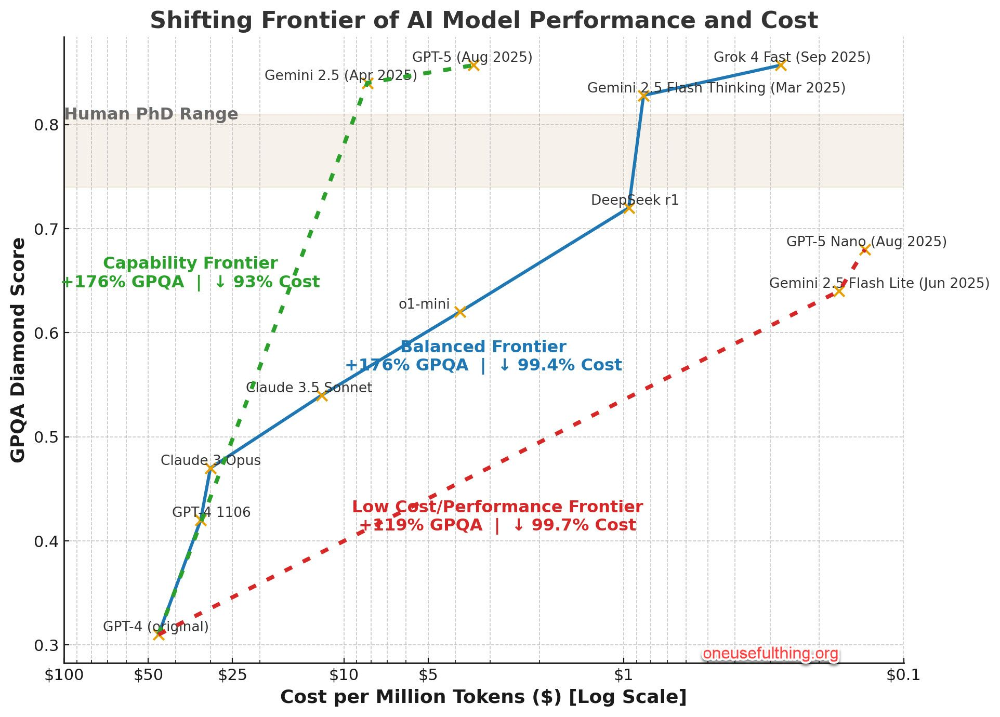
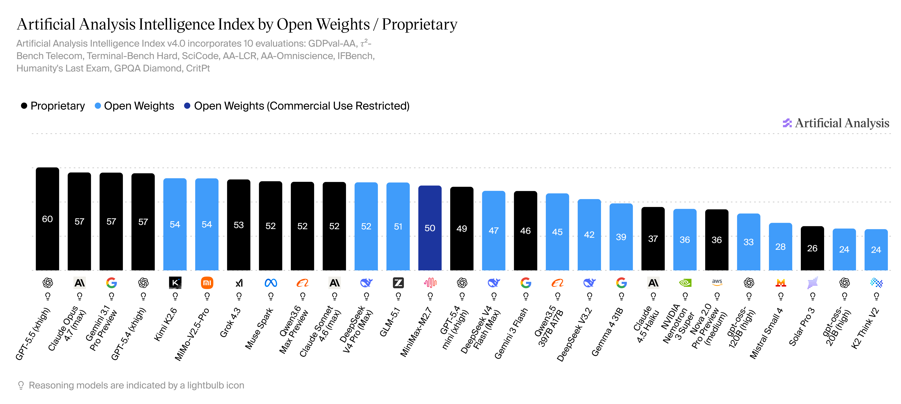
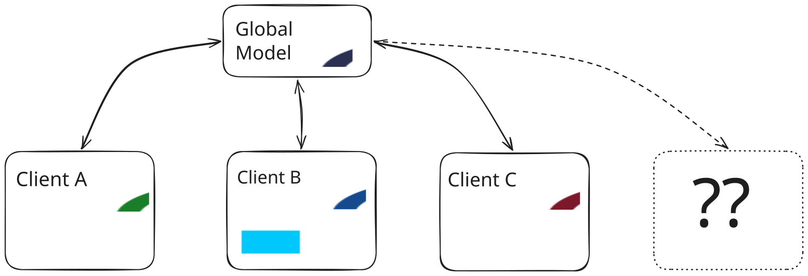
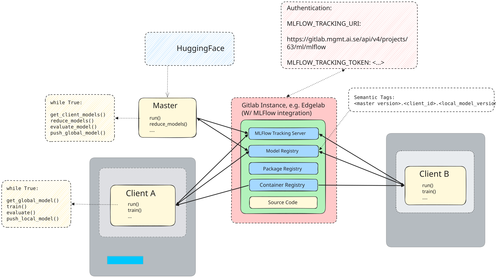
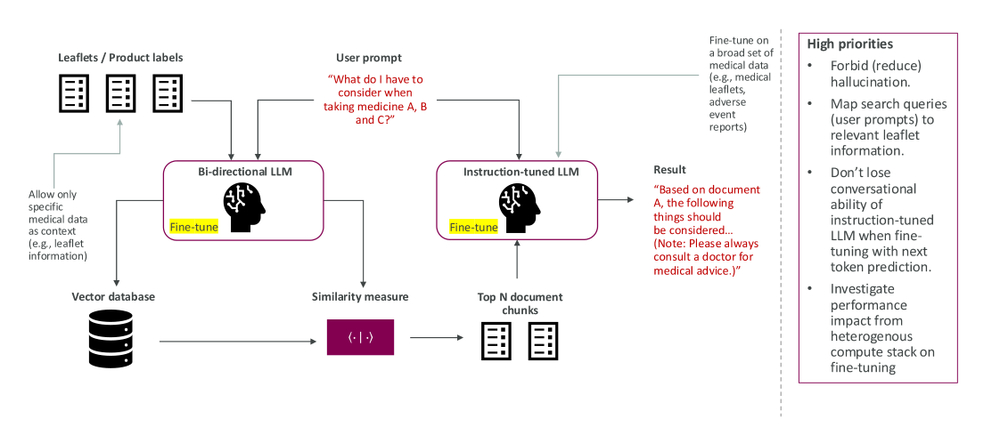
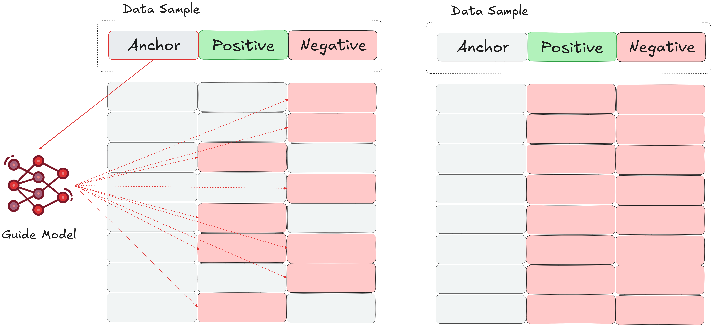
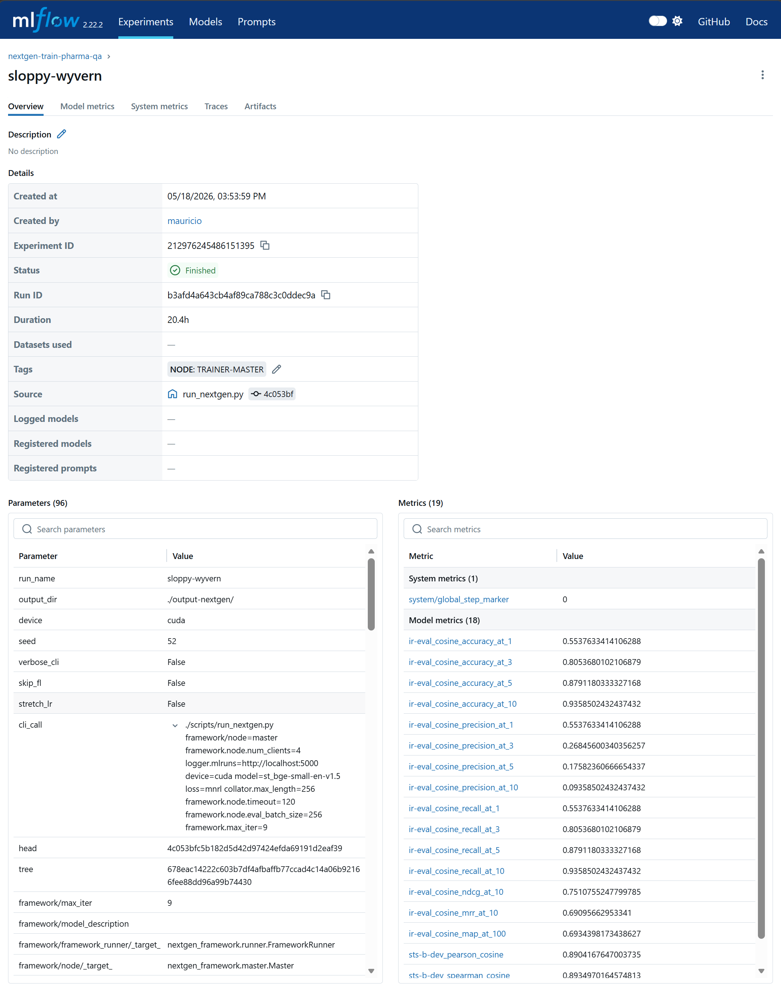
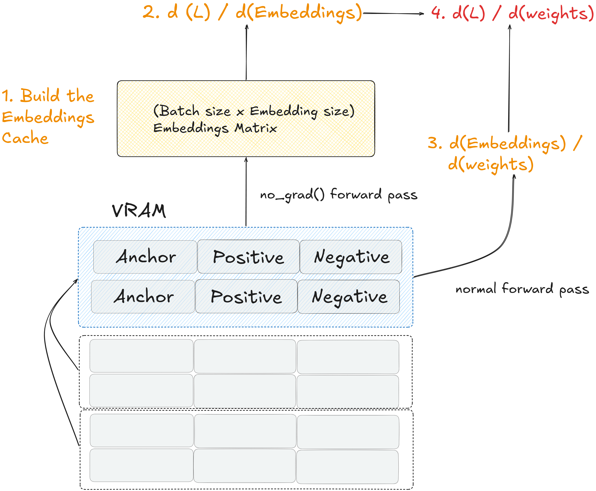
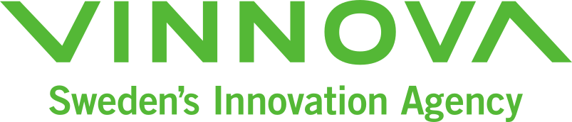
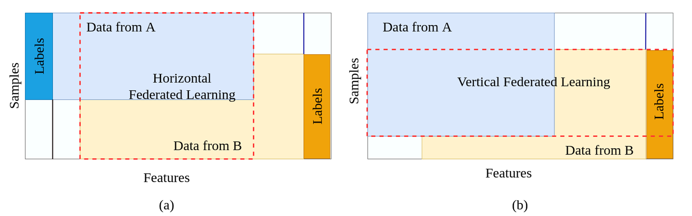

Executive Summary
Model specialization is a core competence for leveraging foundation models. While large pre-trained models provide powerful general-purpose capabilities, many specialized use cases rely on highly niche and domain-specific data, and often require fine-tuning for optimal performance. A large ecosystem of tools and frameworks already exists for this purpose, and yet, collaborative training across different organizations remains underexplored due to severe data privacy, security, and logistical constraints, despite the clear incentives of learning from a wider distribution of data.
Simultaneously, recent studies show that the Total Cost of Ownership (TCO) for on-premise AI compute is increasingly outcompeting third-party cloud services. Actors today are faced with a wide a variety of options in terms compute options. This fast-moving landscape of hardware manufacturing creates a new barrier to collaboration. Our core research question addresses this specifically: How can a software infrastructure enable “plug-and-play” of yet-unknown next-generation hardware architectures for collaborative, decentralized training and fine-tuning of foundation models?
Coordinated by AI Sweden, this project unites infrastructure leaders (Aixia, Intel, NetApp, Proact) and product innovators (AstraZeneca, Zenseact) to architect and validate this solution. We provide a Proof of Value (PoV) of this architecture using a concrete use case at AstraZeneca, where the goal is to improve the performance (factual data retrieval) of a user-facing chatbot for queries related to pharmaceutical knowledge from medical leaflets. The project delivers results across two main fronts:
Infrastructure Design: we demonstrate the feasiblity of joining very different compute architectures for the same underlying task in a compute-agnostic, easily-expandable manner, relying on Federated Learning for decentralization and hardware isolation. We implement an asynchronous and state-driven approach powered by a central (model) store which has key advantages over traditional “centralized orchestrator” approaches in terms of security and robustness. We provide this as an easily installable and integratable package.
Domain Adaptation: We achieve considerable improvements in pharmaceutical data retrieval metrics. While downstream chatbot gains were marginal—likely because the open-source evaluation data was already seen during the model’s pre-training phase—the fine-tuning pipeline itself proved highly effective at specializing the upstream embedding model.
1. Introduction & Motivation
One of the clearest tendencies in LLM development has been the consolidation of high performance models in the hands of only a very few large organizations. Investment requirements have kept increasing in order to keep up with Chinchilla [1] and post-Chinchilla (test-time scaling, e.g. [2]) scaling laws of model performance, while the scale-up effects of infrastructure buildout, along with leaps in low level engineering advances, have resulted in a situation quite characteristic of the early stages of any new technology innovation: large performance increases are tied with a superlinear drop in cost to achieve that performance. Figure 1 below visualizes model performance of 3 different model tiers against the cost per million tokens (on a log scale). Historically, the democratization of such high-tier cognitive capability has no precedent; access to e.g. expert-level reasoning and coding capabilities has never been available to industry and the general public at such a radically reduced price point.

The downstream effects in industry are profound. The data in Figure 2 from [4] shows a drastic increase in adoption of paid subscriptions to AI-based services as the above, coupled with high retention rates and a continued exponential projected growth in the investment for AI software products. This speaks in favor of a general trend toward AI as a commodity consolidated around a handful of AI-first companies. And yet, moving into 2026 there is sufficient evidence to show other tendencies that run counter to this picture of the scale-economics of the AI adoption, which we now look at in more detail.
Total Cost of Ownership for AI Compute
[5] shows the total cost of ownership in 2026 (caveat: for small volumes of compute, graphs based on 1 H100 host) for on-premise compute, compared to pay-as-you-go, 1, 3 and 5 year reserved cloud instances. The report shows breakeven points of 3.5, 6, 9.3, and 10.4 months, respectively (caveat: assuming 100% utilization). According to the same analysis, a utilization rate of 4.3 hours per day already make on-premise the cheaper option in imparison to pay-per-use. The authors summarize these findings as follows: By introducing the “Token Economics” framework, we further quantify the efficiency gap, revealing that owning the infrastructure yields up to an 18x cost advantage per million tokens compared to Model-as-a-Service APIs, offering a strategic roadmap for enterprises seeking to maximize the return on their AI investments over a five-year lifecycle. [5]. Their report considers operation such as maintenance, electricity, cooling, and firmly concludes that as we move through 2026, the economic case for on-premises Generative AI infrastructure has solidified. The era of “cloud-first” for all AI workloads is over. While the cloud remains essential for bursty training and experimentation, the Total Cost of Ownership analysis decisively favors on-premises infrastructure for sustained inference and fine-tuning workloads [5]. Though a strong generalization, the case can certainly be made that the economics of on-premise compute favor high utlization, predictable demand, and actors with access to dedicated infrastructure teams, among other factors.
Data Sovereignty & Regulatory Governance
In contrast to previous years, 2025 and 2026 have been marked by a significant increase in regulatory activity around data sovereignty and privacy. Up until this point it has been mostly possible to view the problem of data privacy in the context of frontier AI model usage essentially as a legal hurdle with largely poorly understood (and enforced) consequences. In 2026, the significant increase of regulatory governance fundamentally changes this picture. For example, In the U.S. alone, an unprecedented 741 AI-related legislative bills were introduced across 30 states by early 2026 [6]. In Europe, the Artificial Intelligence Act (EU AI Act), the Digital Operational Resilience Act (DORA), and the by now well-established General Data Protection Regulation (GDPR), among others, have been viewed by many as a clear reason for the lack of competitiveness in Europe in terms of AI offerings and products. As a consequence, as another report finds, 62% of European organizations are actively seeking sovereign AI architectures (data & infrastructure), a trend led heavily by the banking sector (76%) and organizations in Germany (73%) and Switzerland (64%) [7], showing that data residency and cross-border training restrictions are no longer just high-level legal constraints, but drivers of change on a much more fundamental level. This is a regime into which collaborative decentralized learning fits in remarkably well.
Operative Coupling
The practical reality of leveraging foundation models in production for e.g. product development is often far away from simply using models as prediction black boxes. More specifically, there are methods, approaches and fundamental technologies that naturally tightly couple the compute to the data sources (i.e. the proprietary data and data-generating mechanisms) as well as internal infrastructure on which they are run. For example:
Data context: Retrieval-Augmented Generation (RAGs) are strongly coupled to large vector databases that are updated frequently. Sending and storing data in this frequency may be cost-, latency-, and compliance-prohibitive. Frequent and fine-granular management of the model’s operating context may be necessary to address issues such as context rot [8] (“as the number of tokens in the context window increases, the model’s ability to accurately recall information from that context decreases” [9]), through which models may disregard nuances in original prompt over time, leading to unexpected behaviors. This is especially relevant for agentic workflows, which are a) heavily dependent on a continuous data stream inputs to internally model their environment, and b) are required to perform consistently over time in e.g. whatever their specialist role may be.
Execution context: Agentic workflows are strongly coupled with internal infrastructure, real-time data (model latencies factor into the quality of the output, not just how quickly that output is generated) and are heavily dependent on e.g. specialist domain expert roles and data formats. An example here is benchmarking the “Time To First Token” (TTFT): at the 50th percentile (P50), local inference achieves 15 to 30 milliseconds, whereas it is not uncommon for cloud APIs to move in the 100-300 ms range depending on the hardware, model size, use case, and the provider’s current load [10].
Specialists vs. Generalists
Opinions are often split when it comes to question of whether the future of AI is generalist or specialist in nature. The clear consensus, however, is that specialist models are not to be understood in the same way as we did a decade ago, synonymous with “building models for specific tasks from scratch” - the advent of foundation models has made this a wholly outdated concept. Rather, the discussion now deals with the extent to which specializing generalist models makes any (for example financial) sense at all, given the rate at which frontier AI labs in the past e.g. 5 years have been able to increase their general performance by leveraging their emerging properties, gained through training at scale. As an example, it has been shown that models trained to excel on complex mathematical reasoning also excel at code generation, scientific question-answering, and general instruction-following [11]. Only about 3 years marked the difference between models that were barely competitive on high school level mathematics and models that competed at the IMO [12], [13].
Creating specialist models from generalists ones using external cloud APIs is certainly easier in 2026 that it has been in the past, with some providers now supporting RLHF-style tuning, tool use, structured adapters, etc. However, the reality is that this offering remains highly constrained by the service provider. There is still little to no support for other relevant techniques and their many flavors (as we explore for example in this project’s main use case), including the broad categories of self-supervised learning (SSL), contrastive learning (CL), reinforcement learning (RL), federated learning (FL), or more generally, support for custom losses, alignment techniques, vocabularies, tokenizers, etc. all elements that may be absolutely critical to the use case, especially when dealing with highly niche, specialized data.
Relying on the cloud for fine-tuning workloads is not as obvious a solution as it used to be. Advances in efficient training methods such as parameter-efficient fine-tuning (PEFT) makes it wholly possible to work with high performance models on-premise, without the need to rely on entire clusters of GPUs for training. Historically, fine-tuning a multi-billion parameter model required industrial-grade GPUs, however given well-established PEFT techniques like QLoRA [14] it is possible to do this on consumer-grade graphics cards while maintaining competitive performance in many settings [15]. Methods like PEFT also play especially well with decentralized learning techniques, in that only a small subset of the model’s total parameters are passed across a potentially shared network, reducing network load significantly. This is furthermore a strong facilitator for collaborative training, where the bottleneck is often not just the heterogeneity of the compute itself (see below), but the communication cost of sharing large models back and forth across a bandwidth-limited network.
The discussion on the drawbacks of fine-tuning / specializing an off-the-shelf generalist model comes from a slightly different angle, namely from concerns regarding misalignment [16], and catastrophic forgetting of fundamental model abilities. As the results of this project also show, this is certainly a tradeoff, one that however could be argued is fully justified for a wide variety of specialist use cases in industry. As an example, now well-established orchestration patterns for agentic workflows often rely on the concept of small, capable specialist agents, over approaches that rely on large generalist models for all subtasks: “There’s a vastly underserved market of enterprises that want cheap, reliable models for repetitive use-cases in their systems…. Every task that a frontier agentic model does tens to hundreds of times can potentially be outsourced to a small model.” [17].
Open Source & Other Specialist Foundation Models
In terms of LM-based generalist models, open source offerings have traditionally tracked the performance of closed-source, proprietary models quite closely, with a gap on the scale of months rather than years in many domains. Since 2025, Chinese open source models have scored increasingly well across several model benchmarks, and though care should be taken to investigate the permissiveness of open source licenses in general, the fact remains that for several tasks, open source alternatives can now directly compete with closed source models from Western companies. At the time of writing, [18] reports Kimi K2.6, MiMo-V2.5-Pro, DeepSeek V4 Pro (Max) and GLM-5.1 in places 5, 6, 11, 12 on the Artificial Analysis Intelligence Index (“Artificial Analysis Intelligence Index v4.0 includes: GDPval-AA, 𝜏²-Bench Telecom, Terminal-Bench Hard, SciCode, AA-LCR, AA-Omniscience, IFBench, Humanity’s Last Exam, GPQA Diamond, CritPt”), trailing only a couple of points behind GPT-5.5(xhigh), Claude Opus 4.76 (max), Gemini 3.1 Pro Preview, and GPT-5.4(xhigh). The same models score competitively in places 7,4,5,6 on the Artificial Analysis Agentic Index (“Represents the average of agentic capabilities benchmarks in the Artificial Analysis Intelligence Index (GDPval-AA, 𝜏²-Bench Telecom)”). This example further cements the idea that at least partial independence from closed source LM-based generalists is indeed possible for several tasks.

Industrial applications go further, rarely requiring only language models or LM-based automation agents. For example, in manufacturing, specialist use cases require dedicated architectures natively built for non-linguistic data. This includes zero-shot visual anomaly detection [19] [20], dense 3D point cloud reconstruction for robotic spatial awareness [21] [22], complex multivariate time series forecasting (e.g., [23], [24]), and latent fusion models [25] [26] [27] capable of mapping arbitrary modalities like thermal, depth, and IMU sensor data into a single joint embedding space. Robotics applications almost exclusively rely on (often proprietary) VLA (vision-language-action) models that require specialized training and optimization [28]. In materials science and drug discovery, researchers rely heavily on Graph Neural Networks (GNNs) to model complex molecular structures and protein interactions—operating on topological data that fundamentally differs from the sequential tokenization used by standard language models [29] [30]. Many of these offerings are available for commercial use cases or under permissive licenses such as MIT. In short, the current closed-source offering of generalist VLMs (vision-language models) often also fall short of the operational reality of many industrial use cases.
Next-Generation Infrastructure
Localized specialization of foundation models will therefore remain necessary, even in the wake of further increases in generalist model performance. The motivation behind this project is to consider and challenge the fundamental way in which this process happens in practice, reinforcing the potential for collaborative, decentralized specialization. In this setting, different actors contribute learnings without compromising their data privacy and autonomy. In particular, one of the the aspects of this autonomy is rooted in freedom of choice for (hardware and software) infrastructure and compute. In 2026, organizations are spoiled for choice in terms of compute (whether on-premise or through cloud compute services): Trillium TPUs from Google, Trainium3 from AWS, Gaudi3 from Intel, Maia200 from Microsoft (caveat: inference-only), Cerebras processors, and of course the wide variety of AMD and NVIDIA GPUs, which have been the industry standard for AI compute for over a decade. More recently, the advent of agentic frameworks such as [31] alongside massive leaps in the development of efficient computation methods such as pruning, quantization, distillation, etc. now make it possible to add consumer hardware into this heterogeneous patchwork of compute (most hardware in this case is focused on inference, not training, but it is an interesting trend nonetheless).
This project focuses on compute heterogeneity in industrial setups as one of the key impediments to overcome in collaborative training and fine-tuning of foundation models. Our main effort is to address this through a novel framework for decentralized learning on heterogenous compute for enterprise deployments, described conceptually in Figure 4. The core research question can be stated as follows:
How can we design a use-case and compute-agnostic framework for decentralized learning with explicit support for heterogenous compute hardware and environments, that allows organizations to collaboratively specialize foundation models for their specific use cases in a way that ensures data privacy and autonomy, while remaining “plug-and-play” for future next-generation compute infrastructure?

Core Problems and Requirements
The list below positions our approach to this problem and the main research question, informed by our project partners and highlighting the needs of modern enterprise deployment for collaborative model specialization. These requirements inform which and how tradeoffs were made at the system design level.
Compute heterogeneity introduces important nuances that impact the learning method implementations and therefore software design: differences in numerical precision, parallelism models, memory constraints, training concepts, semantics, and limitations, etc. Our framework should be able to abstract over these nuances and be easily extensible to new computing architectures and paradigms.
Our framework should support heterogeneity not just on the compute/architecture level, but on the environment level as well: users should be able to train on their laptop, using an on-premise “barebones” GPU server, through a scheduler in a computer cluster, or cloud compute directly. The framework should support heterogeneous software stacks across different programming languages.
Focus on cross-silo decentralzation: we target fault tolerance across few (but potentially complex) compute nodes, rather than optimizing for scaling across e.g. 1000s of clients / collaborators.
Minimization of the cybersecurity attack surface - for example, updates should not be forcibly “pushed” to clients.
We require surgical control over the specific training configuration and procedure, forgoing vendor lock-in or high-level abstractions that make it hard to optimize for maximum efficiency at the local level.
Our framework should be natively MLOps-integrated and thus auditable. More than just a standalone library, the framework itself represents a complete workflow that is deeply integrated with a modern, best-in-class MLOps toolchain.
Our framework should be as close to “plug-and-play” as possible with new environments, compute architectures. It should function as a thin wrapper with minimal dependencies, making it possible to run in restrictive environments like HPC clusters in corporate environments.
2. Project Partners
The project partnership includes infrastructure leaders (Aixia, Intel, NetApp, Proact) and product innovators (AstraZeneca, Zenseact) with a common interest in applications of large language models and their specialization for specific use cases across heterogeneous infrastructure environments. Cross-industry learning (i.e. across the product innovators) was not the goal of the project - rather, the idea was to focus on decentralized learning as means to deal with data residency restrictions across geographic silos within the respective companies themselves or their collaborators.
AstraZeneca
In addition to strengthening the project team with AI engineering and research expertise, AstraZeneca provided the project with the main use case at the center of the project’s experiments. This use case focuses on specializing LLM capabilites for factual pharmaceutical data retrieval from medicinal databases in the form of a RAG system (details are the discussed in the following sections below). Efforts were coordinated to validate the use case against internal company objectives and procure usable data for experimentation in this project. More specifically, AstraZeneca assumed ownership of the second part of the experimentation pipeline, namely integrating and testing the downstream language (chat) model as part of the RAG setup on the holdout evaluation dataset that was used to produce the results reported here.
Zenseact
Zenseact entered this project with a strong use case focused on finetuning of large language models for automotive requirements engineering. Unlike the use case specification by AstraZeneca, the focus here was not on retrieval capabilities, but rather on finetuning of generalist models for the purposes of improving in-domain (i.e. automotive) reasoning abilities, and thus serve as a tool for the efficient refactoring and automated engineering of automotive-grade requirement specifications. The main efforts here were geared toward securing the release of company-internal requirement data in order to guarantee that whatever model was used for training was not already pre-trained on it. Securing this release was not possible for the scope of this project, and as no (sufficient) proxy data to take its place was available, Zenseact assumed an advisory role for the latter part of the project, providing guidance for the architectural design of the framework, and continuing to push for its generalizablity across industries and use cases.
Aixia
Aixia’s scheduling system, AiQU, was leveraged by the project as a software asset through which several key experiments were run and deployment scenarios were tested. In particular, this allowed the project to test the viability of connecting federated learning clients sitting behind a job scheduling management system via our framework’s main orchestration pattern. This translates to a fundamental requirement that our framework should fulfill, since schedulers are the de facto standard interface for large industrial compute clusters. Besides providing ongoing software support, Aixia led investigations on adding novel compute like Intel’s Gaudi 2s into the scheduling system.
Intel
This project’s clear focus was on the heterogenous compute scenario for federated learning, and this would certainly not have materialized without Intel providing Gaudi 2 HPUs to the mix of available compute that this project had access to. Efforts included coordinating with AI Sweden’s own infrastructure team to maintain and install the units into our own lab environment, as well as providing guidance and software support for their use throughout the project, as their architecture is inherently different from commonplace GPU architectures.
NetApp
Storage management and optimization is a big part of this demonstrator. Though the intended deployment for this project assumes completely isolated storage systems and solutions between actors, NetApp contributed to the speed and flexibility of getting our experiments running by implementing a storage system at the Linköping site that enabled the physically distributed setup of compute that lies at the core of this project.
Proact
Proact provided the know-how for setting up additional storage solutions, and specifically investigated an additional methodology / tool for sharing data efficiently between sites, called FlexCache. Though this was not leveraged in the final demonstrator due to the relatively small dataset sizes that were available for this project, this option nevertheless remains a good and useful feature for handling data inside e.g. large, geographically distributed organizations, in particular for the purpose of running large, decentralized training runs in heterogenous infrastructure environments.
3. Project Results Summary
This project resulted in a number of output artifacts, including a codebase spanning 4 repositories, 2 curated datasets, and over 200 model training runs and ablations to produce the results detailed in the remaining sections of this report. All project results are open source and are available as supplementary materials to this report.
Code Repositories
pymaxq - This repository is a template for Python projects in Gitlab, incorporating best-in-class tools and patterns for software development in Python, building in practices such as commit hooks, unit testing, documentation, code and documentation versioning, code releases, CI/CD deployment pipelines, etc. into the software development workflow. Both repositories below were built starting from this template.
nextgen-framework - This repository houses the generic federated learning framework designed in this project. The code here is agnostic to the downstream use case, and is designed as a minimal Python dependency that makes the key decentralized learning abstractions visible to the user. By implementing these abstractions for their use case, users can leverage the functionality for training models using federated learning across heterogenous infrastructure setups in their own projects.
nextgen-train - This repository contains the code for the pharmaceutical Q/A use case. It imports and leverages
nextgen-frameworkas a dependency, and is meant to show users an example of how this is done in a practical way. More generally, this repository is meant to validate our claims regarding the usability and practicality of this learning framework.MISSING REPO - A repository containing performance evaluation tools for the RAG system built for the pharmaceutical Q/A use case. It “imports” embedding models finetuned using the (federated) logic from the two preceding repositories and assess their impact on the wider RAG system.
Data
The principal use case for this project was centered on factual data retrieval using LLMs in a RAG setup. The project’s contribution to the pharmaceutical Q/A use case is to provide evidence that training / fine-tuning specialist embedding models can indeed increase performance of the downstream (chat) models in this domain. The training of these embedding models focused exclusively on contrastive learning approaches.
This is a key consideration, since contrastive learning requires training data with a particular format. We curated (as a preprocessing measure) two datasets for this purpose, focusing on two key aspects: 1) mining hard negataives, and 2) supplementing our rather limited dataset with further in-domain data from open-large scale datasets. This results in the following pre-processed datasets, explained more in depth in the sections below:
nicher92/mined_negatives_pharma_qa – The DailyMed data dataset, parsed and structured with (pre-mined) hard negatives for training, for a total of about 2 million examples.
nicher92/combined_pharma_qa – This data is used for in-batch negative training. It contains the positive pairs from the EMA leaflets, with an additional ~1 million pharmaceutical related texts mined from fineweb-edu.
RAG evaluation Q/A dataset – This dataset was created for the purpose of validating the performance of the integrated RAG system, resulting in 1952 questions created from 500 different EMA leaflets. Q/A pairs were created based on these leaflets using GPT4o.
Models & Evaluation
We ran experiments resulting in over 200 fine-tuned models as part of this demonstrator. For each of these model runs and ablations we track a key set of metrics that have been synthesized into the results section of this report (see use-case section). Providing the models themselves (and their intermediate versions across FL training) is not feasible due to their size and number, however we provide a copy of all training run metric logs across all of our experiments in the form of several MLFlow mlruns directories (one for each GPU host, experiments are name-matched across these), attached as supplementary material to this report. Please refer to the experiments and results evaluation below for a summary of our findings.
4. The NextGen Framework (The Engineering Solution)
Please also refer to nextgen-framework, which implements the concepts introduced in this section as a Python software package. The repository is also available as supplementary material to this report.
Architecture and Basic Concepts

The choice of architecture presented in Figure 5 is heavily informed by the requirements introduced in the introductory section of this report. These requirements strongly point in the direction of security, transparency, and modularity (e.g. for redundancy) suitable for enterprise deployments. A successful architecture must effectively address two main concepts: 1) the node deployment pattern (i.e. the lifecycle management of client and server nodes, where they run and how), and 2) the communication pattern (how these deployed nodes communicate with each other). We outline the conceptual design of these patterns below, followed by their practical software implementation.
Conceptual Implementation
For our architecture, the communication pattern requirements translate to two core design decisions: 1) clients must only ever participate willingly in the federation process, i.e. models and updates may not be forcibly pushed, and 2) central-orchestrator patterns, where clients work as “dumb” workers at the behest of a central, opaque orchestrator, are not suitable. Instead, we rely on the concept of “blackboard pattern”, where the state is central, observable, and consumed not just by the compute-heavy clients, but the (traditionally central) FL server as well. All nodes of the federated learning framework are therefore equal-class citizens, but perform fundamentally different functions independently of each other. The following describes an interaction scenario between these nodes during a typical training run, as implemented by our framework:
A user creates a master node using a specific experiment configuration. The node automatically sets up i.e. downloads the model, tags it, and uploads it to the “blackboard”. The node knows in advance how many clients to expect in the federation process, so it continually monitors the versions numbers visible there, and idles until all clients have contributed their local models for the current round.
A user creates one or more client nodes. By using the same experiment identifier as the previously created master node, the client monitors the available model versions for the running experiment, and downloads the latest available global model version.
The client node sets up its local dataloaders, model training stack, etc. and runs the local training according to the hyperparameters of the given experiment configuration. After training is done, the client bumps the model version and pushes it back to the blackboard, and idles until a new global version is made available.
Meanwhile, the master node periodically queries which (client) model versions exist for any global model version, and downloads and aggregates all client models as soon as they are available. It then bumps the model version and uploads it, repeating the cycle for as many global iterations as the user specified in the experiment configuration.
Note that this concept is designed with operational robustness in mind: if a client or master node fails at any point, the remaining nodes are unaffected, as their behavior only depends on the blackboard itself. Furthermore, when nodes are started, they always look for the latest model version(s) available, i.e. do not assume training re-starts from scratch every time. This means that users can simply re-run node deployment calls as-is, and the resulting nodes simply pick up where they left off.
Perhaps most importantly, the conceptual design of the framework allows it to remain applicable to multiple use cases and use case types. While the framework handles the FL orchestration logic as described above, it does not assume any particular type of underlying model, training method, or software stack; the data by definition is always constrained to the clients anyway. Users of this library can use it to train traditional vision models in a supervised setting just as easily as e.g. language models in a self-supervised setting, like we have done in this project. See below for additional practical considerations.
In terms of the node deployment pattern, containerization is the key concept that enables the heterogeneous patchwork of compute in this architecture. This allows the different clients (as well as the master node) to work in an optimized way (i.e. for their respective compute architecture), in isolated environments that implement the communication pattern detailed above. A basic containerization tactic allows clients to abstract the complexity of their inner workings away, translating internal system complexities (e.g. dependencies on specific libraries or hardware architecture optimizations) to a single external dependency, namely the API that we introduce in this framework: the API that coordinates the learning mechanics between different nodes of the architecture.
Actual Implementation
The following subsections illustrate how the conceptual implementation for the learning framework was mapped to specific tools and software components. We note that the main contribution of this framework is actually not the specific implementations below - by design users are not vendor-locked to any of these options, and many stand-in replacements exist that allow for other implementations of the same conceptual architecture. The configuration below simply validates the concept of our framework, showing that there is at least one such implementation that works in practice.
The Gitlab Blackboard and Communication Protocol
In a sense, Gitlab is an excellent starting point for this framework, since it is open source (more specifically: open-core), and contains all of the necessary components that we need for a complete blackboard approach. We note, however, that these components could all be decentralized and sourced from different providers, without changing the fundamental way in which this framework works. These components include:
- Model registry: with its native MLFlow integration, Gitlab provides repositories with space to store and associate model weights with experiments (additionally for FL: a place to store intermediate client versions / specializations)
- MLFlow tracking server: learning metrics for experiments can also be tracked directly in Gitlab. Model weights and the monitored metrics are tightly coupled from an architectural point of view, providing higher visibility that highlights the provenance of any given model.
- Package registry: a space to store different model releases of the training code itself.
- Container registry: a space to store Docker images, each tailored for e.g. different compute environments. Clients run their training in their respective containers spawned from these images; the entire containerization stack (the code, the Dockerfile specification, all runtime optimizations, etc.) all remain visible and auditable as part of the joint learning project.
The NextGen Framework builds on top of this joint offering. Every model training project gets its own such “blackboard” (i.e. a Gitlab project / repository with fresh instances of all of the components above), and leverages the NextGen Framework in order to manage the FL training cycle. Under the hood, the framework uses the Gitlab REST API to allow the master node (where client models are e.g. aggregated and tested) and client compute nodes (where the training on client-local data actually happens) to pull and push models to the central model repository and not directly to and from each other. This design allows the master node to be completely decoupled from the client nodes, i.e. no direct communication ever occurs between these. Intermediate models are transparently stored in the Model Registry (in the Gitlab UI under Deploy -> Model Registry).
Model Versioning
The Gitlab model registry relies on semantic model versioning, which we adapt to track federated model versions across sets of clients. We manually build model version numbers using the following semantics:
{global model version}.{client_id}.{local model version}For example, a version tag of 1.2.3 corresponds to a model that has gone through global aggregation once (1), is currently being trained further at client with ID 2, and at that client, has a local version number of 3 (for example, after training 3 epochs locally). Some tags have special meanings. For example, a version tag of 2.0.0 corresponds to the model at the master node after 2 aggregation rounds from clients. Likewise, a version tag of 0.0.0 represents a fresh model for which training has yet to begin.
Docker
Docker becomes an essential tool to create and optimize the environment for local compute units. The blackboard pattern dictates what the model weights look like, but containerization options like Docker dictate how they are computed. For example, to leverage the full potential of a Gaudi HPU, users could launch training runs in a Docker container that builds on top of the optimized libraries offered by HabanaLabs (i.e. using optimum-habana), rather than generic ones. A different user could pull in that exact same code in a container optimized for AMD or NVIDIA CUDA. Note that this is outside the scope of this framework and up to the client project: the only requirement from a framework perspective is connectivity to Gitlab / the “blackboard” from wherever the training loop is run. As part of its offering, Gitlab provides a container registry, which we use to transparently house Docker images that can be used as templates for different compute environments.
Intra-Node Scaling
Our framework completely abstracts away the concept of what a ‘compute node’ is in its setup. What this means in practice: in the descriptions and generalizations above, a “client node” in the framework isn’t just a laptop or local GPU, it can be an entire multi-GPU or multi-HPU cluster, or anything in between. For example, a single client can be composed of multiple compute units (GPUs, HPUs, etc.) that use the Pytorch DDP API. Since this client still outputs a single set of weights it is therefore still interpreted by our framework as a single client. This is a particularly important point and distinction for enterprise setups, where nodes are often multi-accelerator units that cannot be logically addressed at the per-accelerator level. Even more concretely, certain types of learning may require horizontal scaling in this way. For example, in this project we rely heavily on contrastive learning methods, which benefit from having large batch sizes in the training loop. For contrastive learning, training in DDP with the gather_across_devices=True setting accumulates a virtual batch size (adds more negatives) in a way that is simply not achievable when breaking away from the DDP setup in favor of smaller compute clients, or when setting gradient_accumulation_steps > 1. See the use-case section below for more details on contrastive learning as applied to our use case.
Generalizability
As stated above, one important feature of this framework is its applicability across use cases, with some use cases putting more stress on the current architecture than others. Because the current framework implementation relies on the blackboard pattern, the Gitlab Model Registry, and Dockerized environments, the orchestration layer is completely decoupled from the mathematical payload. The Gitlab registry does not care what is inside the model version artifact, only about its version tag. This means:
- A client could upload a 40GB full-weight checkpoint.
- A client could upload a 50MB LoRA adapter.
- A client could even upload a purely quantized artifact.
From a framework-theoretical perspective, these are all equivalent - it is solely up to the user (outside of the scope of this framework) to know how to parse, aggregate, and train these artifacts in their own code. However, not all options have the same effect: training full sized models like in the first option is bound to reach the LFS limits of Gitlab sooner than training small LoRA adapters, in particular because the current implementation transparently saves all intermediate models across all federation rounds. The network itself can also quickly become a bottleneck here. See below for more general limitations of the current approach.
Deployment
Our deployment strategies rely heavily on a containerization tool like Docker. Motivated by the requirement of being able run not just across different compute hardware manufacturers, but likewise across heterogeneous compute environments, we differentiate between the two setups below. Note that regardless of which applies, both setups only require visibility and access to the Gitlab instance, which may require manual whitelisting of IP addresses and ports, depending on the situation.
Direct access to compute resources. These are situations where compute resources are transparent to a user, i.e. users can launch training runs directly via a remote session, or even directly on their own local machine. This use case also encompasses using cloud compute resources. In this case, users can simply launch the node deployment scripts provided by this framework as-is; however, we strongly recommend relying on a controlled execution environment like a Docker container, see below. A good pattern here is to set up the underlying Docker image as a purely “environment” / development image, which mounts rather than copies any data or code, thus making it highly reusable (coupled to infrastructure, not code).
Indirect access via a scheduler. Support for this use case is a must, since access to enterprise compute resources is almost always managed by a scheduler. In this project, we use Aixia’s AiQU scheduler as an example, to show how to connect these resources using our learning framework. AiQU expects a Docker image as an input, and spins up a container in order to run it with a specific, user-given command. Our framework automates this process as follows (this is after performing the one-time setup of e.g. correctly defining and assigning resources such as GPUs and storage to queues, configuring firewalls and networking, access rights, etc.):
- Clients define a CI/CD workflow to build the Docker image that packages the latest revision of their code.
- This project (NextGen framework) provides Gitlab CI templates in
/templatesthat users of this framework can use. These templates expose the AiQU call parameters - some of these can be automatically populated, such as the pointer to the latest image build. - This project makes a manual job available that the user can start using the Gitlab UI. This job wraps all of the populated parameters in a JSON format and packs this in a REST call to the AiQU API, which then uses this input to spawn a new job.
Notably, when dealing with schedulers, there are at least two possible different implementation concepts: 1) starting a long-running job, which idles when no further computation is possible (e.g. one client is waiting on the others to finish in the current round), or 2) jobs are transient, with new jobs starting and stopping as soon as possible. New jobs pick up on the latest training state (the model versions published in the Gitlab model registry) and simply continue as necessary. Both variants are viable, and while the latter option is preferable in order to maximize the utilization of compute resources in e.g. a large cluster, we opt for the former version for the sake of simplicity in this initial demonstrator.
Hands On NextGenFramework
This section provides additional details into NextGenFramework, focusing on what the current implementation looks like on a low level. The following provides these details from the perspective of a user guide for prospective users interested in integrating this software package into their own project from scratch. The idea is to show what exactly happens at the intersection of the framework and projects that use it, in order to showcase the framework’s ease-of-use and generality.
Add the NextGenFramework Dependency
If you are managing your project dependencies with uv:
Specify the package source for NextGenFramework e.g. in your pyproject.toml:
[tool.uv.sources]
nextgen_framework = { index = "nextgen" }
[[tool.uv.index]]
name = "nextgen"
url = "https://gitlab.mgmt.ai.se/api/v4/projects/63/packages/pypi/simple"Specify the dependency:
[dependency-groups]
training = ["nextgen_framework", ...]Authenticate uv:
Perhaps the easiest way to authenticate uv is to set the corresponding environment variables, which follow a specific syntax:
UV_INDEX_<NAME>_USERNAME
UV_INDEX_<NAME>_PASSWORDWhere <NAME> corresponds to the name attribute given in tool.uv.index in the pyproject.toml for this resource. So, in this example, for the NextGen dependency you need to set
UV_INDEX_NEXTGEN_USERNAME
UV_INDEX_NEXTGEN_PASSWORDwhere the username corresponds to e.g. your Gitlab username and the password corresponds to a GitLab Personal Access Token (PAT) / Deploy Token with at least read_api access. Get this from the maintainers / admins of the NextGenFramework repository.
Recommended: create a .env file in the root of the project (this file is git-ignored) and add these credentials there directly.
Wrapping Your Training Logic
NextGenFramework uses a BaseTrainer abstraction that you should override with your own training logic:
from nextgen_framework.interfaces import BaseTrainer, TrainerArgs
from pathlib import Path
class Trainer(BaseTrainer):
"""Dummy trainer implementation for illustration purposes."""
def __init__(self, cfg: TrainerArgs):
super().__init__(cfg)
# Access parameters like self.cfg.param1, etc.
def setup(self) -> Path:
"""Runs on the master, creates initial model, returns its Path."""
# Download model from HF, etc. and save to file
# ...
return Path("/path/to/your/local/model")
def train(self, model_path: Path, version: str) -> Path:
"""Runs on the client. Load model at the path and train."""
# load model, train, local evaluation, etc.
# ....
# save new trained model and return it
return Path("/path/to/updated/model/or/artifact")
def reduce_models(self, model_paths: list[Path], version: str) -> Path:
"""Runs on the master. Aggregate all models with the given paths"""
# E.g. FedAvg: perform simple averaging across all models
# ...
# Save new aggregated model
return Path("/path/to/new/aggregated/model/or/artifact")
def eval_model(self, model_path: Path, version: str) -> None:
"""Runs on the master. Evaluate the model with given version and path"""
# Load evaluation dataloaders, run benchmarks, and log results, etc.
# ...The
trainmethod is what is executed on each client nodes. It takes thePathto a saved (global) model with the given version, continues training e.g. for a given set of epochs or steps, saves the result, and returns thePathto it. Note that we abstract away what exactly is being stored - it could be a raw binary file with the model weights, a completetransformers.Trainerobject, etc. Up to you to encode and decode it. The framework will automatically package and upload the entire directory (or single file) pointed to by your returned Path to the central Model Registry as a versioned artifact.Similarly, the
reduce_modelsmethod is run by the master node, and reduces models pointed to by the given list ofPaths to a single model instance, thePathof which is returned. This is where you would implement different federated aggregation strategies.Your
Trainer’s init method should receive anextgen_framework.interfaces.TrainerArgsobject as an input. This is a thin wrapper around an OmegaConfDictConfigobject.In order to pass arguments to your trainer, you need to parametrize your application as described in the next section.
NextGenFramework manages the low-level orchestration that makes the input model available at each of their respective input Paths above, however you are in control of where the “output” models of each method are stored locally. These are uploaded to the Model Registry anyway, so using e.g. transient, temporary directories is perfectly fine.
Also note, you can communicate (e.g. variable) state between the init method and the other methods, but these methods cannot communicate state with each other directly because they are designed to run in different places. This is why the model and its training state has to be saved and loaded from disk - models are first pulled from the common storage (e.g. Gitlab model registry) and saved locally for training or aggregation.
Parametrizing your application and training run
Hydra makes it very easy to structure your training runs as experiments with hyperparameters that can be overridden dynamically at runtime. The following represents an example top-level experiment config. Note that you don’t necessarily have to rewrite your entire application in this way - you can also “hardcode” the elements from point 1 below directly in your Trainer class, at the cost of making it less reusable. We require a config file with at least the following items:
A config group that points to the NextGenFramework trainer you created in the previous step. Below:
trainer: mytrainer.A config group that points to the NextGenFramework config settings. Below:
framework: framework.# File: my_config.yaml defaults: - _self_ - framework: framework - trainer: mytrainer - data: mydata - logger: mylogger - model: mymodel # random seed seed: 52 # Default overrides run_name: "" # Leave empty to auto generate slug output_dir: ./output-nextgen/ # Important! Don't leave this out - this lets you also modify the default configuration options of the framework itself hydra: searchpath: - "pkg://nextgen_framework/config"
In your application code you specify the config groups for
data,logger(e.g. MLFlow, W&B, etc.),model, etc. These are the things that your specific application knows about independently ofNextGenFramework. These are all optional.Add a new config group called
trainerto point NextGenFramework to the actual trainer implementation you want to use. We would expect a directory with nametraineron the same level as the location of the config filemy_config.yamlabove, with a file called e.g.mytrainer.yamlthat points to e.g. wherever you have stored your trainer implementation:# File: mytrainer.yaml # Modify this path to point to wherever your logic is stored _target_: my_app.nextgen_trainer.TrainerBy adding
NextGenFrameworkas a dependency, you can now add a new config group calledframework, giving you access to the configuration options of the framework itself, which include all of the settings for the federated learning orchestration. Seenextgen_framework/config/framework/framework.yamlfor details. Make sure to modify the Hydra searchpath as in the example above, in order to make these options visible in your project.Define the entry point to your application, which parses your configuration file. The configuration file is used to create a
nextgen_framework.runner.FrameworkRunner, which creates and starts the requested node, and initializes and starts your Trainer in that node.# File: run_app.py import hydra from hydra.utils import instantiate from omegaconf import OmegaConf from dotenv import load_dotenv @hydra.main(config_path="../nextgen_train/configs", config_name="nextgen") def main(cfg): """Entrypoint for NextGen integration.""" print("--- Starting Framework Run ---") runner = instantiate(cfg.framework.framework_runner) runner.run(cfg) print("--- Framework Run Finished ---") if __name__ == "__main__": main()We can now connect the full “path” of how your chosen hyperparameters and their overrides connect to the trainer: you can call your application like in the following example:
uv run python run_app.py framework/node=client framework.max_iter=5 framework.node.client_id=1
In this call you can overwrite any of the parameters you specified in my_config.yaml or any of its sub-config files, including parameters of NextGenFramework itself, like in the example above. All parameters values (whether overriden or their default values) are passed to your trainer and available in the object passed to its init method.
Running Nodes
You retain total control in terms of where and how to runs which nodes, which allows you to be extra flexible in terms of how to organize your model learning. As an example, you could have the following setup:
Deploy a master node manually on your local machine. Mark the name (slug) of the experiment run used (look at the logs - this is generated randomly and automatically unless you specify it).
Deploy a client node on an enterprise cluster via a scheduler on a queue with several large GPUs to benefit from faster training, specifying the same experiment run used in step 1. This tells this client to connect to the training run and to download the model that has been already been setup by the master node.
Deploy a client node on a smaller VM hosted elsewhere, with additional accelerators attached directly, following the same instructions as above.
All of these resources come together to run your distributed training task. The subsections below provide more details for these different types of deployment.
Running a Node Manually
This project’s key concern is to connect compute resources regardless of what environments they may sit in. In this context, “running a node manually” refers to use cases where you have direct access to compute resources, through e.g. remote access, or cloud compute scenarios. All experiments in this project that used this approach connected client nodes to GPUs or HPUs via a virtual machines in a local lab environment, however running client nodes in cloud compute environments was also successfully tested with IBM Cloud. Both situations require the central Gitlab instance (or whatever “blackboard” is used) to be visible, which in the case of cloud compute services managed by third parties may require additional whitelisting of IP addresses and ports. The following looks at the process of manual node deployment in more depth with this basic assumption in mind.
The current implementation uses Gitlab as the intermediary communication buffer between master and client nodes in the federation network, and as a first step you will need to setup authentication for Gitlab manually. Nodes will need to communicate with Gitlab to push and pull models from the model registry. To authenticate these requests, you can create Project Access Tokens to distribute to anyone that will participate in running either a client or master node. These tokens should have at least the following scopes: api, read_registry and write_registry, and a Maintainer role.
These need to be set as environment variables wherever a node is run.
# File: .env
export MLFLOW_TRACKING_TOKEN=<your PAT>
export MLFLOW_TRACKING_URI=<the MLFlow integration endpoint for your repo>As an example, an MLFlow endpoint can look something like this: https://gitlab.mgmt.ai.se/api/v4/projects/<your project ID>/ml/mlflow/, where <your project ID> can be read off your main repository settings.
Recommendation: keep these variables in a local .env file together with the uv authentication variables discussed above.
To run your application:
source .env
uv run python run_app.py ...In this example, run_app.py is the main entry point you have defined for this application, see above. Optionally, you can simply activate your local .venv to avoid having to prepend uv run to your calls.
Using a Job Scheduler
Use this option if hardware access is managed by a scheduler, for example in typical enterprise computing clusters. In this project, we use Aixia’s AiQU scheduler as an example to show how our framework can be used in this setting.
AiQU Setup
First, together with your AiQU administrator, make sure AiQU is correctly configured for your project. This includes the following points (web GUI available at e.g. https://app.aiqu.ai/jobs):
- You have queues defined, with the resources (GPU, storage) assigned as necessary. You can deploy a client or server node to each queue.
- The correct Docker registries are defined, so that AiQU knows where to look for your project Docker image (see below). For example, for pulling Docker images from projects on the AI Sweden’s Gitlab instance, you should add
gitlab.mgmt.ai.se:5050/<your project group> - Make sure that any necessary data is added (and later mounted to the container, see
STORAGE_SOURCE,STORAGE_TARGETvariables below).
Add a Dockerfile
The NextGenFramework deployment system relies on Docker as a way to abstract your training logic from the actual hardware that will be running it. AiQU takes a Docker image as input and deploys it as a container, in an environment with the user-specified resources described above.
AS the user, you are responsible for the optimization of your Dockerfile for speed and compatibility with your hardware / compute. There are however a couple of things to consider in terms of compatibility with NextGenFramework:
You should define an environment variable
CMDin your image that will ultimately be populated at runtime with your full training call, see the section and example below.In order to install custom dependencies (like NextGenFramework) in the image, you will need to authenticate
uv. We look for build secretsuv_usernameanduv_password. In addition,uvrequires some version tag for your code, which you can pass as a build argument (VERSION):docker build --secret id=uv_username,env=$UV_USERNAME --secret id=uv_password,env=$UV_PASSWORD --build-arg VERSION=... -f docker/Dockerfile .
For example, here are the last two stages of a mult-stage Docker build that implements this pattern and puts all application code and dependencies into the /app directory in the image. In this example, nextgen_train is the name of the project that uses NextGenFramework. To optimize the image itself, the Dockerfile first installs uv, then strictly project dependencies, followed by the project itself. The last stage simply copies the environment and source code into the final image:
# ---- STAGE 2: Builder -----------------------------------------------------------------
FROM base AS builder
# Install uv
COPY --from=ghcr.io/astral-sh/uv:latest /uv /uvx /bin/
# Hatchling requires a version number to package / install with the code.
# Pass via --build-arg
ARG VERSION=0.0.0
# Install dependencies into .venv
# Because of --no-install-project, this dependency layer will only invalidate
# when we install new dependencies, not change our source code
COPY pyproject.toml uv.lock ./
RUN --mount=type=secret,id=uv_username \
--mount=type=secret,id=uv_password \
--mount=type=cache,target=/root/.cache/uv \
UV_INDEX_NEXTGEN_USERNAME=$(cat /run/secrets/uv_username) \
UV_INDEX_NEXTGEN_PASSWORD=$(cat /run/secrets/uv_password) \
uv sync --frozen --no-dev --group training --no-install-project
# Install our project code
COPY README.md LICENSE.md ./
COPY ./scripts ./scripts
COPY ./nextgen_train ./nextgen_train
# `--no-editable`: installs our project dependency straight into `site-packages`
# = no messing around with env variables to find the package
RUN --mount=type=secret,id=uv_username \
--mount=type=secret,id=uv_password \
--mount=type=cache,target=/root/.cache/uv \
UV_INDEX_NEXTGEN_USERNAME=$(cat /run/secrets/uv_username) \
UV_INDEX_NEXTGEN_PASSWORD=$(cat /run/secrets/uv_password) \
uv sync --frozen --no-dev --group training --no-editable
# ---- STAGE 3: Production --------------------------------------------------------------
FROM base AS production
WORKDIR /app
# Just need the environment and the source code!
COPY --link --from=builder /app/.venv /app/.venv
COPY --link --from=builder /app/scripts /app/scripts
COPY --link --from=builder /app/nextgen_train /app/nextgen_train
# Need to specify this placeholder for the runtime call!
ENV CMD=""
CMD exec $CMDDeployment in CI
Deploying a master or client node is all done through a CI workflow in Gitlab to ensure transparency and robustness. NextGenFramework provides some default templates that users can overrride and use to deploy nodes. To do that, add the following to the CI workflow in your project:
Reference the NextGenFramework workflow templates:
# Imports deployment jobs from the nextgen_framework
# NOTE: whoever runs the pipeline must be granted at least a 'Reporter' role
# in the nextgen_framework project
include:
# Change `nextgeninfra` to whatever group the repository belongs to in Gitlab
- project: 'nextgeninfra/nextgen_framework'
ref: 'main'
file: '/templates/aiqu.yml'Make sure your pipeline has (at least) a deploy stage (usually as the last stage of the CI workflow):
stages:
- test
- version
- build
- release
- deployAdd a job to build and deploy your Docker image. If using Gitlab, you can use the default image registry in your repo for storage. Here is an example of how to build your Docker image using buildx. It uses your Docker registry as the Docker cache, rather than the local runner, a common pattern to optimize for space on shared runners. Note that we pass uv authentication as build secrets and versioning informaton as build arguments as specified above. This job creates and pushes your Docker image to a repository of your choice (if using Gitlab, by default the container registry in your repo), and tags it with a meaningful name ($CI_REGISTRY_IMAGE:latest). We will use this name to reference the image in the next step.
# Build and push the Docker image to the GitLab Container Registry.
# The two jobs are bundled here, because the image is too large for passing
# around as a .tar
build-and-push-image:
stage: build
tags:
- shell
before_script:
# Login to the GitLab Container Registry using a short-lived, secure job token.
- docker login -u "$CI_REGISTRY_USER" -p "$CI_JOB_TOKEN" $CI_REGISTRY
# Generate the official BuildKit config to trust the internal CA cert
- |
cat <<EOF > buildkitd.toml
[registry."gitlab.mgmt.ai.se:5050"]
ca=["${GIT_SSL_CAINFO}"]
EOF
# BUMPED_VERSION and/or APP_VERSION are set in a preceding job
- FINAL_VERSION=${BUMPED_VERSION:-$APP_VERSION}
- echo "Building Docker image with code version $FINAL_VERSION..."
# Spin up the shared builder and feed it the config file
- export BUILDER_NAME="nextgen-shared-builder"
- docker buildx inspect $BUILDER_NAME > /dev/null 2>&1 || docker buildx create --name $BUILDER_NAME --driver docker-container --config buildkitd.toml
- docker buildx use $BUILDER_NAME
- docker buildx inspect --bootstrap
script:
# Build the image and tag it securely
# NOTE: provenance metadata can mess with the Gitlab UI
# -> turn off unless required!
- |
docker buildx build --push \
--provenance=false \
--secret id=internal_ca,src="${GIT_SSL_CAINFO}" \
--secret id=uv_username,env=UV_INDEX_NEXTGEN_USERNAME \
--secret id=uv_password,env=UV_INDEX_NEXTGEN_PASSWORD \
--build-arg VERSION="$FINAL_VERSION" \
--cache-from type=registry,ref="$CI_REGISTRY_IMAGE:buildcache" \
--cache-to type=registry,ref="$CI_REGISTRY_IMAGE:buildcache",mode=max \
-f docker/Dockerfile \
-t "$CI_REGISTRY_IMAGE:$CI_COMMIT_SHORT_SHA" \
-t "$CI_REGISTRY_IMAGE:latest" .
after_script:
- echo "Cleaning up local runner ..."
- docker image prune -f
- docker builder prune -fAdd the deployment job with your default parameters. This job is a wrapper over a job called .deploy-node, made available by NextGenFramework. This is a job with manual deployment, with parameters that you can modify at runtime, or just hardcode them here. For the full list of parameters you can override here see templates/aiqu.yaml.
# Wrapper over the deployment template at `templates/aiqu.yaml`
deploy:
stage: deploy
extends: .deploy-node
variables:
# This points to the image tag built in the previous step!
IMAGE: $CI_PROJECT_PATH:$CI_COMMIT_SHORT_SHA
QID: 107
GPUS: 1
STORAGE_ID: 225
STORAGE_SOURCE: "/my/data"
STORAGE_TARGET: "/my/data"
# Mapped to MLFLOW_TRACKING_TOKEN internally
MLFLOW_API_TOKEN: "$CI_JOB_TOKEN"
# You can hardcode a specific default run here, or just
# override it at runtime in UI!
CMD: "uv run python run_app.py framework/node=client ..."
...Training
The training process is designed to be resilient to individual node failures. This is a big advantage of the “pull-only” architecture we use: for example, if a client node requires the next version of the global model to proceed with its local training, it will just continue querying the model repository until a model is made available and tagged with the expected version number. If the client fails for whatever reason, re-starting it will automatically figure out where it left off. The same applies to the server: if the server fails, re-starting it will first check if all requirements are met in order for it to pull all necessary client models, in which case it simply carries on where the global training left off.
You can use this to your advantage to e.g. add more clients dynamically to the training. By default, the master node must know in advance how to many client nodes to expect before to launch an aggregation round:
uv run python ./scripts/run_nextgen.py framework/node=master framework.node.num_clients=2 run_name=my_run ...However, new clients can be added “dynamically” by simply stopping the master node and restarting it with the updated client count, making sure to explicitly set the run name to that of the previous run, so it knows to continue where it left off:
uv run python ./scripts/run_nextgen.py framework/node=master framework.node.num_clients=3 run_name=my_run ...Limitations of the Current Framework Implementation
Currently, our approach has several limitations.
No redundancies at the master / central node. We rely on a single Gitlab instance as a single source of truth for storing and managing model versions. This translates to a potential single source of failure, particularly if poorly configured or not secured.
Network bandwidth and Gitlab LFS storage limits are the primary scaling bottlenecks for training massive models, particularly over many rounds, as currently all intermediate model versions are stored.
No stress tests on Gitlab have yet been carried out. I.e. scaling the number of clients could quickly turn this central instance into a bottleneck.
Though we are not vendor-locked to Gitlab, scaling to a large number of clients may be difficult as the instance becomes a bottleneck, for example when uploading and downloading a large number of models concurrently across several projects.
While the communication/deployment pattern is asynchronous (nodes spin up, idle, and push/pull independently without a master node holding a live, persistent socket connection to them), the learning process is synchronous in the sense that the entire optimization will only go as fast as the slowest client. This is a known limitation of decentralized learning approaches like federated learning, and beyond the scope of this project. Additionally, The master node must know in advance how many clients to expect.
Authentication on a per-client level. Currently, anyone with the right
MLFLOW_TRACKING_URLandMLFLOW_TRACKING_TOKENauthentication data can publish models under arbitrary version numbers, which can lead to (potentially unintended!) model / data poisoning errors.Because this framework has been designed with minimal requirements and assumptions for clients (i.e. all must agree only on the format of the model weights and on the communication protocol to the “blackboard”), clients of this framework could theoretically also use other languages beyond Python, or have completely different training stacks (e.g. Pytorch vs. JAX). At the time of writing this still remains untested; currently, we don’t offer Python bindings for other languages, but since the interface to our library is quite minimal, we do not expect this to be a major hurdle.
A Comparison to the Flower FL Framework
Many high quality, open source federated learning frameworks are already directly available for use. This immediatley raises the question, whether the functionality in these frameworks is already sufficient to fulfill the formal requirements listed in the introduction section of this report. Flower [32] is an expcellent example of one such available framework. In this section we provide some remarks that justify the need for a different solution. While both projects are solving the problem of federated learning, this project does so with fundamentally different philosophies and architectural trade-offs. Our approach is uniquely tailored to a specific, modern MLOps ecosystem and provides distinct advantages that Flower does not; we argue that it is meets the list of requirements to a better degree than this open source alternative.
Communication and State Management
The single biggest difference lies in the communication model.
Flower uses a synchronous, connection-based model. The server directly communicates with clients via gRPC, a high-performance RPC framework. It manages the state of the training round in-memory and pushes instructions to clients.
In contrast, this project uses an asynchronous, artifact-based model. The server and clients never speak to each other directly, reducing the attack surface from a cybersecurity perspective, and removing complexities associated with brittle networking conditions. They communicate indirectly by publishing and polling versioned artifacts (models) in a central, persistent store (by default, a MLflow Model Registry). While this arguably makes for a single point of failure of the entire system, this can be easily remedied by building in redundancies that a user can be in complete control over, and are therefore suited for deployment and monitoring in highly-secured (corporate) environments.
Asynchronous and Disconnected by Design
This project’s architecture is inherently built for unreliable and disconnected environments, which is common in real-world scenarios.
In a standard Flower setup, clients need to be online and available to accept connections from the server for a training round to proceed. If a client is offline or behind a restrictive firewall, it can’t participate.
In contrast, our clients operate on their own schedule. They just need to be able to see the central (Gitlab) registry. A client can pull the global model, go offline for hours (or days) to train, and then push its result whenever it comes back online. The master node is equally patient; it simply waits for the required number of artifacts to appear. This is far more resilient.
Superior Heterogeneity Management via Containerization
While Flower supports heterogeneous devices, our approach handles it more robustly at a lower level.
Flower manages heterogeneity at the Python level. The user is responsible for ensuring that the Python environment, including all system-level dependencies (like specific CUDA or cuDNN versions), is correctly configured on each client device. This can be very brittle.
In contrast, we manage heterogeneity at the OS level using Docker. A user with an NVIDIA GPU can use a Dockerfile built FROM nvidia/cuda, while a user with an AMD GPU can use one built FROM rocm/pytorch; our framework is completely agnostic to this. As long as the container can run the entrypoint script and connect to GitLab, it can participate. This means that clients don’t even need to write their training logic in Python; very lean Python bindings would be required to plug in an existing system written in a completely different language. This is a much stronger and more reliable form of isolation.
Natively MLOps-Integrated and Auditable
This framework isn’t a standalone library; it’s a complete workflow that is deeply integrated with a modern, best-in-class MLOps toolchain.
Flower’s library-only approach is different. To get features like versioning, artifact storage, and deployment orchestration, it is necessary to build an MLOps platform around it, integrating it with tools like MLflow, Docker, and a CI/CD system yourself.
In contrast, our framework is built from these tools directly. The MLflow Model Registry provides a persistent, versioned, and auditable history of every single model from every client at every federated round. Whereas Flower’s state is typically ephemeral and managed in-memory on the server, this framework allows a user to “go back in time” and see (and run model validation on) the exact model e.g. client #2 produced in round #5. This is incredibly powerful for debugging, compliance, and governance.
Decoupled and Simplified Orchestration
A typical Flower deployment requires a user to run and manage a long-lived server process and then start client processes that connect to it, which requires significant manual orchestration.
While this also applies to workflows based on this framework, the difference lies on the architecture level. Our architecture is based on stateless, containerized jobs handled by an external scheduler of choice (AiQU). There is no central server to maintain. The “server” is just another Docker container that runs for one aggregation round and then idles. This model is more resource-efficient and fits perfectly into modern, event-driven CI/CD and job scheduling platforms like GitLab and AiQU.
Enhanced Security through a Pull-Based Architecture
This framework’s communication model is fundamentally more secure than a traditional server-initiated approach like the one used by Flower. It isn’t just an alternative communication method, it’s an architecture that is arguably better suited for the realities of modern enterprise and institutional networks, oftentimes even necessary for deployments where security and operational simplicity are paramount.
Flower uses gRPC, where the server actively initiates connections to the clients to send them instructions and configurations. This means every client must expose an open network port and listen for incoming connections from the server.
Our model is based on client-initiated pull: clients are “dark” to the outside world, never accepting incoming connections. All communication is initiated outbound from the client to a single, well-known, and highly secured endpoint (the GitLab registry).
This seemingly small difference has massive security and operational implications.
Firewall and Network Traversal
In any real-world corporate, hospital, or research environment, clients are behind strict firewalls that block all incoming connections by default. To make Flower work, network administrators would have to create complex and often risky firewall exceptions, VPNs, or reverse proxies for every single client. This is a major potential security hurdle and an operational difficulty.
In contrast, our system model is inherently firewall-friendly. Outbound connections from a client to a server on a standard port (like HTTPS/443 for GitLab) are almost universally permitted. This framework works out-of-the-box in these high-security environments with no special network configuration required.
Drastically Reduced Attack Surface
Every client running a gRPC server is another potential point of entry in your system. The overall attack surface is large, and the security of the entire system depends on the security of its weakest client.
In our approach, the attack surface is minimal, yet concentrated. The only point of entry is the GitLab server, which is already a hardened, professionally managed security endpoint. The clients themselves expose zero open ports, making them invisible and inaccessible to external attackers.
Simplified Trust and Authentication
In Flower, the server needs to know and trust the addresses of all its clients. Clients need to be configured to accept connections only from the legitimate server, often requiring complex mutual TLS (mTLS) certificate management to secure the connections.
Here, the trust model is simpler. Clients only need to trust the central GitLab server and authenticate to it. There is no need for clients to manage incoming connections or for the server to even know the clients’ network locations or configurations.
Language Agnostic by Default
Our architecture naturally supports a polyglot (multi-language) environment because the “contract” for participation is based on universal, language-agnostic standards: REST API calls and file I/O. For a client to participate in the federated learning network, it only needs to be able to do three things:
Make an authenticated HTTPS GET request to download a model file.
Perform some computation on that file.
Make an authenticated HTTPS POST request to upload a new model file.
The Implication: This is a trivial task in almost any modern programming language (C++, Java, Rust, Go, etc.). Every language has mature libraries for making HTTP requests and handling files. The user does not need a complex SDK.
Containerization is the final piece of the puzzle. A user writing their client in C++ can use a Dockerfile with a C++ compiler, install the LibTorch library, and package their compiled application. As long as that container can make HTTP calls, it can be a first-class citizen in the federated learning network.
For Flower, the Interface is a gRPC Service. For a client to participate in a Flower network, it must implement a specific gRPC service. This involves:
Using Protocol Buffers (.proto files) to generate client-side code stubs.
Implementing the logic for multiple RPC methods (GetParameters, Fit, Evaluate).
Managing the lifecycle of a persistent gRPC connection to the server.
While gRPC is theoretically language-agnostic, the entire Flower ecosystem and its tooling are Python-centric. There is a rich, high-level Python SDK that handles all the complex gRPC machinery for the user. For a C++ developer, this SDK does not exist. They would have to implement the entire client from scratch, dealing with low-level gRPC calls and Protobuf serialization of model weights. This is a significantly higher barrier to entry.
| Feature | This Framework | Flower |
|---|---|---|
| Core Interface | REST API + File I/O. A universal and simple standard. | gRPC Service. A complex RPC protocol requiring specific stubs. |
| Barrier to Entry | Low. Requires only a standard HTTP client and file access. | High. Requires implementing a complex gRPC client from scratch without an SDK. |
| Language Inter- operability |
Naturally high. The focus is on the data (the model file), not the code. | Theoretically high, practically low. The ecosystem is heavily biased towards the Python SDK. |
| Ecosystem Bias | Language-agnostic, supports any environment with HTTP and file I/O. | Python-centric, limited support for other languages. |
Conclusion
Flower is an excellent, general-purpose framework for researchers and developers who want a library to quickly build and experiment with synchronous FL algorithms. The idea here isn’t to replace or displace FL frameworks like Flower - our focus on simplicity, freedom from vendor lock-ins, and security, results in a different set of priorities that informs an overall different system design.
We offer an MLOps-native framework for organizations that want to conduct robust, auditable, and asynchronous federated learning across highly diverse and even potentially unreliable compute environments, all within the safety and structure of their existing GitLab and container-based workflows.
5. Use-Case: RAG for Medical Leaflets (AstraZeneca)
Please also refer to nextgen-train, which implements the concepts and experiments introduced in this section. The repository is also available as supplementary material to this report.
About the Use Case
AstraZeneca is a large global biopharmaceutical company engaged in the discovery, development, and commercialization of prescription medicines, operating in over 100 countries worldwide. AI engineers within the engineering team for the Centre of Artificial Intelligence (part of Data Science & AI in Biopharmaceutical R&D) collaborated on this project, including the definition of this use case, to further the goal of bridging the gap between the latest AI techniques and their applications within AstraZeneca to accelerate drug discovery, optimize clinical trials and improve patient outcomes across all therapy areas.
By prioritizing the development of in-house specialist models, AstraZeneca maintains absolute control over both its proprietary data and the resulting models. The specialization and application of LLMs in clinical settings present unique operational and ethical challenges. Most notably, in contexts where patient health, scientific accuracy, and regulatory compliance are paramount, model hallucinations are strictly forbidden. For this reason, the present use case was consciously scoped around improving performance of retrieval models in the context of Retrieval-Augmented Generation (RAG). In contrast to e.g. unconstrained generation, this methodology ensures traceability by grounding the model’s outputs in verifiable citations from trusted medical literature. Furthermore, the highly sensitive nature of pharmaceutical and patient data necessitates stringent privacy measures, making federated training a highly relevant approach. Interest in this project was driven by a desire to understand the performance penalty of learning in a decentralized way, in addition to the penalty introduced by incorporating heterogeneous compute into the mix.
Beyond the immediate technical requirements of clinical deployment, this project served as a crucial opportunity for exploration and experimentation. By participating in this collaborative framework, the team aimed to expand its expertise in the latest AI techniques and refine its methodologies for rigorously evaluating LLMs within highly restricted domains.
Problem Statement
Patients using multiple medicines must currently cross-reference various lengthy medical leaflets to identify potential drug-drug interactions and side effects. This is a highly complex task that requires navigating obscure medical vocabularies — for example, mapping brand names to their underlying active ingredients. Here is an example query a patient might have:
I currently take medicines A, B, and C. I am planning to start medicine D. Are there any specific interactions or side effects I should worry about?”
Implementation Plan

A typical RAG system is composed of two distinct models: an embedding model, which projects offline documents and live user queries into a shared latent space to retrieve relevant information via similarity search, and a conversational LLM (the generator), which receives the retrieved text context to formulate a grounded, natural-language response. Rather than focusing on fine-tuning the downstream generative model—which risks catastrophic forgetting and damaging its general reasoning or conversational abilities without careful instruction re-tuning—this project focuses on the highly impactful but underexplored area of fine-tuning the embedding model itself. By training the embedding model specifically on pharmaceutical data and clinical nuances, the goal is to achieve better spatial separation and clustering in the latent space. This fundamentally improves the quality and relevance of the retrieved data, allowing the downstream generator to cite and refer to highly accurate passages in medical leaflets.
The main novelty and challenge of this project was to perform this embedding model fine-tuning using a decentralized, federated approach across heterogeneous compute environments, and to quantify the performance penalty of this approach compared to a traditional centralized training baseline.
To accomplish this, a key implementation hurdle was adapting the raw pharmaceutical leaflets into a format suitable for contrastive learning, the learning paradigm by which embedding models are trained. Fine-tuning a retrieval model requires positive semantic pairs, and (whether explicitly or implicitly) some notion of semantic negatives. A considerable portion of the overall effort was dedicated to building a data pipeline that generates a sufficiently diverse, leaflet-based Question-Answering (QA) dataset, encapsulating both simple and ideally also complex queries spanning multiple medicines. See below for more details on the available data sources and this pre-processing pipeline.
Finally, a robust evaluation concept is paramount to the implementation plan. We quantitatively evaluate the success of this project on two fronts: 1) the retrieval performance, i.e. evaluating the mathematical improvement of the embedding model itself on ranking metrics, and 2) the impact on system performance, i.e. evaluating the downstream impact of the fine-tuned embeddings on the overall RAG system’s answer generation. See below for more details on this evaluation process.
Data
We consider a variety of open-source sources for pharmaceutical data:
EMA list of available medicines (ca. 2k), with each leaflet .pdf spanning 50-100 pages. The leaftlet content per medicine includes:
- Summary of product characteristics
- Manufacturer(s) responsible for batch release
- Conditions or restrictions regarding supply and use
- Other conditions and requirements of the marketing authorisation
- Conditions or restrictions with regards to the safe and effective use of the medical product
- Labelling and Package Leaflet (the focus for this project)
OpenFDA: “an Elasticsearch-based API that serves public FDA data about nouns like drugs, devices, and foods. Each of these nouns has one or more categories, which serve unique data-such as data about recall enforcement reports, or about adverse events”
DailyMed database containing ~150,000 labeling for prescription and nonprescription drugs for human and animal use, submitted to the Food and Drug Administration (FDA) by companies.
The embedding model is trained using contrastive learning (CL) approaches (see section below on understanding contrastive learning), which requires processing these raw datastes further. For example, when using mined hard negatives for CL, we explicitly generate (anchor, positive, negative) tuples for training. More details below.
Negative Sampling Strategies
A key difference between CL algorithms is how the set of negative (contrastive) pairs are built for a given dataset, specifically in order to compute gradients during training. We consider the following options:
In-Batch Negatives: This method is the simplest. It takes pairs of questions and answers and uses other examples within the same batch as negative samples during training. It’s efficient but may not always provide the hardest negatives.
Pre-Mined Hard Negatives: This method uses a dataset where difficult, semantically similar negatives have already been found in a separate processing step. This is often a very effective strategy, as it allows models to pick up on subtle semantic nuances that go beyond simple pattern matching of e.g. proper names.
In-Document Negatives: This two-step workflow is for creating and training on negatives that are contextually relevant (i.e., from the same drug label). The first step of this process creates triplet samples on a per-document basis; the second step then trains with the pre-mined hard negatives approach above.
Our experiments look at both in-batch negatives and pre-mined hard negatives. We preprocess and generate datasets for each modality as explained below.
Processed datasets
The processed datasets are hosted on Hugging Face for easy access and reproducibility. Each dataset is tailored to a specific type of negative sampling as follows.
- Mined Negatives QA: nicher92/mined_negatives_pharma_qa – This is the DailyMed data, parsed and structured with (pre-mined) hard negatives for training, totalling to about 2 million examples. Here is an example (note how the negative distractor explicity includes the drug name, also found in the anchor. An effective negative sampling strategy must distinguish between semantic and syntactic similarity between the texts, see section below for more info):
Anchor (Query)
What adverse reactions were reported more commonly in patients taking METFORMIN HYDROCHLORIDE EXTENDED-RELEASE TABLETS compared to those taking a placebo?
Positive (True Answer)
…, adverse reaction rates observed in the clinical trials of a drug cannot be directly compared to rates in the clinical trials of another drug and may not reflect the rates observed in practice. In Metformin Hydrochloride Extended-Release Tablets In placebo-controlled trials, 781 patients were administered ….
Negative (Distractor)
Metformin hydrochloride extended-release tablets are contraindicated in patients with: • 2 [see Warnings and Precautions ( 5.1 • •
- Combined QA: nicher92/combined_pharma_qa – This data is used for in-batch negative training. It contains the positive pairs from the EMA leaflets, plus an additional ~1 million pharmaceutical related texts from fineweb-edu.
The following details the step-by-step process for creating these datasets from their raw sources. Unless otherwise specified, scripts and helper functions for the steps below are provided in the nextgen-train repository.
Workflow
Data (XMLs, Parquet) 🠆 Generate Q&A 🠆 Combine 🠆 (Mine Negatives) 🠆 Training
Step 1a: Download Raw Drug Data
We provide a script to retrieve the raw prescription data from the DailyMed source. It creates and populates a desired output directory (default: data/raw/dailymed_prescription/unzipped_data/, see script for full configuration options) with thousands of XML files.
./scripts/data_processing/download_dailymed.shStep 1b: FineWeb-EDU Data Extraction
From HuggingFace: “FineWeb-Edu dataset consists of 1.3T tokens and 5.4T tokens (FineWeb-Edu-score-2) of educational web pages filtered from the FineWeb dataset”. We use it in this project to supplement our existing pharmaceutical datasets with additional data. To achieve this we used a two-stage process:
First, we used the EMA-leaflet corpus to construct a simple Okapi BM25-based filtering approach. This was used as an initial filter on the vast amount of data in Fineweb-EDU to restrict it to the subset that could plausibly be pharma-related. See
./scripts/data_processing/bm25.py.Then, on this subset, we applied an active-learning based approach similar to LLM-as-a-judge:
Given an embedding model (example: intfloat/multilingual-e5-small), we embed all texts in the subset. On these embeddings, we apply an active learning approach to iteratively discover relevant data. We use a linear support vector machine classifier, with an LLM acting as annotator:
Given a prompt such as (“Does the document contain pharma-related questions and answers that are factual and informative? Answer YES/NO”), we use the linear classifier judgement to sample informative samples from the filtered fw-edu data and let the LLM label the sampled data points.
Initially (when no labeled data points exists, or when all labeled data points have the same label) we sampled K random data points from the unlabeled set. When labeled data points exists for both classes, we sample points using a relaxed K-Means-simple margin method: Extract the N unlabeled data points closest to the separating hyperplane of the classifier, cluster them into K clusters using KMeans, and send the data point closest to the separating hyperplane in each cluster to the LLM to be labeled. As a consequence, for each round we label K new data points, and refit the linear classifier.
This process was then repeated until convergence of the linear classifier, and we filtered the data set based on its classification of all subset samples. The output of this process is a
.parquetfile with the additional data samples.
Notes:
The active learning setup (developed independently from this project) is packaged as a general purpose libary.
Embeddings were computed using HuggingFace text embedding inference: text-embeddings-inference.
In
./scripts/data_processing/bm25.py, thefw.pklandpharma.pklare BM25-stats objects computed based on fineweb-edu and the EMU-documents respectively, using the aggregatator objects found in the script.
Step 2: Parse XML into a Clean JSONL File
This step converts the XML files from Step 1a into a simple, structured format. This creates the file data/processed/parsed_drug_data_recursive.jsonl.
python ./scripts/data_processing/process_dl_data.pyStep 3: Generate Questions from Source Texts
This script uses an LLM to generate question-answer pairs from our two source files produced in the previous steps. This creates generated_questions_to_data.jsonl and generated_questions_from_parquet.jsonl.
From DailyMed:
python ./scripts/data_processing/generate_questions.py \
--input_file data/processed/parsed_drug_data_recursive.jsonl \
--output_file data/processed/generated_questions_to_data.jsonl \
--data_type jsonlFrom Fine Web (see Step 1b):
python ./scripts/data_processing/generate_questions.py \
--input_file data/raw/fwdata.parquet \
--output_file data/processed/generated_questions_from_parquet.jsonl \
--data_type parquetStep 4: Combine Datasets
This script merges the two generated QA datasets into a single, unified dataset, creating the data/processed/combined_questions_answers/ directory.
python ./scripts/data_processing/combine_datasets.pyStep 5: Mine Hard Negatives
This final step creates a specialized dataset with challenging negative examples for advanced training. This creates the data/processed/mined_negatives/ directory.
python ./scripts/data_processing/mine_hard_negatives.pyTraining
In this section we describe the context of the model training process, highlighting some of the key implementation focus points for the project.
Docker
As mentioned in previous sessions, we use Docker containers as optimized, isolated environments for running training on specific compute architectures. There are two considerations here: 1) optimizing the Dockerfile itself, and 2) optimizing how the Docker image is run. General Dockerfile optimization is out of scope of this report, however there are a couple of patterns worth highlighting:
Optimizing Dockerfiles
Using a multi-stage approach, where we first parse the project dependencies, and feed this dependency list to a second stage built on top of hardware-specialized base image (e.g. provided by the hardware manufacturer).
For the first stage above, making sure that our installed dependencies do not override optimized libraries of the base image of the second stage. For example, an image for Gaudi deployment could use a base image Habana Labs in the second stage:
FROM vault.habana.ai/gaudi-docker/1.24.0/ubuntu22.04/habanalabs/pytorch-installer-2.10.0:latestThis image already contains optimized libraries like Pytorch; if some other project dependency requires these libraries, it could potentially overwrite the optimized one with the generic variant, leading to worse performance in the best case and catastrophic incompatibilities in the worst case. Therefore, it is recommended to first transparently generate the list of dependencies, and filter out potential offenders manually:
RUN uv export --frozen --no-dev --group training --group gaudi --no-hashes --no-emit-project --format requirements-txt > requirements.txt RUN grep -vE '^(torch|torchvision|torchaudio|vllm|nvidia|triton)' requirements.txt > requirements.final.txt
Installing these dependencies in the second stage should consider the --no-deps flag to avoid chasing indirect dependencies and installing only the previously exported ones:
RUN uv pip install ... --no-deps -r requirements.final.txtBuilding these development Docker images currently only requires build secrets for uv authorization (username and password / PAT, for dependencies that require authorization) and for CA certificates (for general internet connectivity). See examples in the repository for more details.
Optimizing docker run
These are mostly low-level optimizations that are highly specific to the specific hardware setup and therefore might not generalize. These options include setting things like kernel and stability flags, hardware access and isolation flags, debugging flags, and manipulating environment settings via e.g. environment variables. Here is an example that explicitly sets different cache locations for different Gaudi HPUs in a single host, in order to avoid cache poisoning or locking when e.g. launching clients simultaneously on different HPUs. See nextgen-train/scripts/ for more details:
docker run -it --rm --runtime=habana ...
-e HABANA_VISIBLE_DEVICES=$DEVICE_ID
-e PT_HPU_RECIPE_CACHE_CONFIG=/tmp/recipe_cache_$DEVICE_ID,False,1024
...Models
As explained above, this pharmaceutical RAG use case involves two types of models: the downstream conversationalist LLM, and the embedding model, which is what we fine-tune in this project. The downstream model is a small Qwen/Qwen2.5-7B-Instruct and remains constant throughtout all experiments. For the embedding models, we consider 3 popular alternatives to represent different architectural eras and size-to-performance ratios:
| all-MiniLM-L6-v2 | all-mpnet-base-v2 | bge-small-en-v1.5 | |
|---|---|---|---|
| Architecture | Distilled BERT | MPNet | BERT |
| Parameters | 22.7M | 109M | 33.4M |
| Transformer Layers | 6 | 12 | 12 |
| Dimensions | 384 | 768 | 384 |
| Max Tokens | 512 | 384 | 512 |
| Mean MTEB [33] Score (Task) | ~59.03 | N/A | ~64.3 |
all-MiniLM-L6-v2 represents the traditional “fast and cheap” control model. With only 6 layers and ~22M parameters, it was historically the go-to choice for low-VRAM environments. In a federated learning context, its tiny parameter footprint makes it incredibly fast to transmit across the network between the master and client nodes.
all-mpnet-base-v2 was for many years the industry standard for high-performance retrieval. However, it requires significantly more compute: it has 5x the parameters of MiniLM, a wider embedding dimension (768), and a restrictive max sequence length (384 tokens).
BAAI/bge-small-en-v1.5 is a popular, modern SOTA model in its category (i.e. models < 100M parameters). It retains the same lightweight embedding dimension (384) as MiniLM and only increases the payload size slightly (to 33M parameters), making it efficient for federated network transmission and edge-compute memory constraints. Despite being 3x smaller than MPNet, its modern contrastive pre-training and 12-layer depth allow it to outperform the larger MPNet on many MTEB tasks. We explicitly select this model for our benchmarking because it represents the SOTA within the <100M parameter tier, offering the highest possible retrieval performance while maintaining a manageable payload size of under 100MB.
While frontier embedding models in the 7B–8B parameter class (such as Qwen or Llama-based embedders) achieve significantly higher absolute MTEB scores, they require moving GBs worth of weights per communication round, especially as we scale the number of clients. This renders them logistically unviable for rapid federated learning prototyping.
Losses
As we are finetuning embedding models with contrastive learning approaches, we require contrastive learning loss functions. In this report we focus on two different loss functions, Multiple Negative Ranking Loss (MNRL) and Cached GIST Embed Loss.
MNRL (the Information Retrieval community’s implementation of the widely known InfoNCE contrastive loss function) is the “bread and butter” of modern text embedding fine-tuning. Its main advantage is that it doesn’t strictly require negatives: For each sample (Anchor, Positive) in a batch, this loss assign every other anchor’s Positive as a negative. That is, for a batch size k, we get k-1 negatives per anchor. The loss function itself is basically just a classification (Cross Entropy) loss that predicts each anchor’s \(a_i\) Positive \(p_i\) against the rest of the positives and negatives in the batch:
\[L = -\frac{1}{n} \sum_{i=1}^{n} \log \frac{e^{\text{sim}(a_i, p_i) / \tau}}{\sum_{j=1}^{n} e^{\text{sim}(a_i, p_j) / \tau}}\]
The Cached GIST Embed Loss addresses two core issues with MNRL / InfoNCE. First, instead of matching every anchor to every other anchor’s positive / negative as a negative, it filters out the bad matches with the help of a “guide model”. The second improvement builds on the observation that unlike in supervised learning, contrastive learning generally improves when the batch size is large, see below. Large batches can be broken down and processed as mini batches without changing the mathematical result, but at the cost of additional latency.

It is important to note that this caching mechanism is unlike the effect of setting gradient_accumulation_steps > 1. Fundamentally, and unlike supervised learning, the loss function itself is a function of the batch size. Therefore, in contrastive learning:
The batch size isn’t (just) an efficiency metric. It’s the definition of the task itself. Using large batches translates to navigating sharp, high-resolution loss landscapes, while using smaller batch sizes translates to navigating flat, low-resolution loss landscapes.
The implications on federated learning are considerable: in FL with heterogenous compute (i.e. different VRAM capacities), averaging these models without weighting or scaling is mathematically equivalent to mixing high- and low-definition signals. See the section further below for additional explanations on how to understand the batch size in contrastive learning tasks.
Losses and Compute Architectures
The selection of loss function for this use case is not arbitrary, and is heavily tied into the architecture of the compute itself. As discussed above, for contrastive learning it is mostly preferable to maximize the batch size as much as possible. This of course has its limits, in that as the batch size is increased, so does the probability of including false negatives into the batch (samples which are actually Positives to the anchor, which are treated as negatives by e.g. a simple algorithm like MNRL). This adds noise to learning signal, and a good way to assess the tradeoff is by simply increasing the batch size until a retrieval metric like MRR (Mean Reciprocal Rank, see evaluation section below) starts to be affected.
Building large batch sizes can be achieved in different ways. The most straightforward one is to join the batches across all units in a DDP setup; this can be done by setting gather_across_devices parameter in the TrainingArgs input to the (HuggingFace) Trainer object.
Otherwise, as described above, the CachedGISTEmbedLoss itself is a means of dealing with the memory bottleneck of MNRL and thus a way to benefit from larger batches by processing them as mini-batches. However, the Gaudi HPU architecture, which heavily relies on lazy evaluation on static, compiled graphs, poses difficulty for this loss function on at least two different fronts that we directly observed in this project:
Custom Autograd.
CachedGISTEmbedLoss(and similar implementations likeCachedMultipleNegativesRankingLoss) relies heavily on gradient caching algorithms. These algorithms break the forward and backward passes into micro-batches using highly customizedtorch.autograd.Functionimplementations to manually manipulate and accumulate gradients. For Intel Gaudis, the SynapseAI graph compiler gets its massive speedups by tracing standard PyTorch operations and compiling them into highly optimized, static C++ HPU Graphs (use_hpu_graphs_for_training=True). When faced with a custombackward()pass that it cannot statically trace, it is forced to fall back to dynamic/eager execution, which to a large extent nullifies the benefit of hardware acceleration.VRAM Fragmentation. Gaudi’s memory allocator is highly optimized for predictable, contiguous memory blocks.
CachedGISTEmbedLossintentionally manipulates memory allocation for mini batches, dropping negatives filtered out by the guide model and their intermediate activations (i.e. leading to dynamic tensor shapes), holding onto cached gradients, and stitching them together later. This constant allocation and deallocation of fragmented tensors prevents SynapseAI from efficiently caching memory workspaces, often leads to OOM errors, as memory quickly becomes saturated with stale, outdated graphs rather than actual data (graph cache exhaustion).
As an example for the impact on memory usage, running the training on a Gaudi2 (98GB VRAM) with CachedGISTEmbedLoss and a small model (<100MB size) topped out at a total batch size of only 2048 (with each sample in the batch composed of a anchor, positive, negative triplet, each truncated at 256 tokens). In comparison, using a simpler MNRL loss that does not introduce dynamic tensor shapes in the same way allowed us to raise the batch size to 8192.
As a general rule of thumb, in every experiment we maximize the batch size for each compute unit. For Gaudi HPUs, this meant using MNRL instead of CachedGISTEmbedLoss; for the smaller AMD and NVIDIA cards (each with only about half the memory as the Gaudis), where no static graphs are compiled, we used CachedGISTEmbedLoss to simulate as large a batch size as possible. For example, for the AMD accelerator, we were able to achieve a similarly large batch size of 8192 as the Gaudis in this way. See details in the section on compute below.
Optimizers
For all fine-tuning experiments, we utilized the Fused AdamW optimizer adamw_torch_fused. While AdamW is the de facto standard for training transformer-based architectures due to its decoupled weight decay (which significantly improves model generalization and prevents overfitting) the specific selection of the fused implementation was driven by hardware efficiency constraints.
Standard optimizer steps launch multiple sequential kernels to update gradients, momentums, and weights, creating a severe memory-bandwidth bottleneck. The fused implementation combines these element-wise operations into a single kernel execution. In the context of our heterogeneous compute framework (e.g. specifically for Intel Gaudi HPUs) this optimization theoretically reduces kernel launch overhead, minimizes VRAM read/write operations, and prevents costly CPU-device synchronizations. This approach complements the static graph compilation of the SynapseAI compiler, ensuring maximum throughput during the federated training rounds.
Logging
We use the MLFlow Tracking API to log model metrics during experiments. Due to its MLFlow integration, the Gitlab instance can be used as an MLFlow tracking server, however for our experiments we run servers independently, as the UI is simply better and more flexible. Starting an MLFlow server is simple:
uv run mlflow server --backend-store-uri /mlruns --port 5000Then, when launching a client or master node, we can simply point it to this endpoint:
source .env && ./scripts/run_amd_dev.sh amd-env:latest 0 python scripts/run_nextgen.py framework/node=client logger.mlruns="http://localhost:5000" ...Our general logging strategy for federated learning is therefore as follows: Logging happens on the per-node level. All runs share the same global run name, which can be either be given by the user or auto-generated if no name is provided. To differentiate runs with the same name in the backend, we also attach a node-ID tag to each run to identify the responsible node in each case, see Figure 7. For each experiment run, we log all metrics returned by the configured evaluators (see below), as well as all the metadata and hyperparameters required to reproduce the run from scratch.

Compute
To practically evaluate the framework’s ability to orchestrate federated learning across a diverse, decentralized hardware landscape, we utilized three distinct compute environments. These environments span different silicon architectures (Intel, AMD, NVIDIA), memory capacities, geographical locations, and access paradigms.
| Hardware / Accelerator | Memory | Units | Location | Access Method |
|---|---|---|---|---|
| Intel Gaudi 2 | 98 GB | 2 | AI Sweden (Linköping) | Direct VM (Single Host), HPUs used independently |
| AMD 7900 XT | 46 GB | 1 | AI Sweden (Gothenburg) | Direct VM |
| NVIDIA A100 | 40 GB | 1 | AI Sweden (Gothenburg) | AiQU Scheduler (Part of 4x Host) |
The intent here is to mirror the reality of modern enterprise deployments on a small scale. It successfully demonstrates the framework’s capability to seamlessly integrate high-performance clustered environments managed by enterprise schedulers (the NVIDIA A100 via AiQU) with standalone, direct-access virtual machines utilizing competing accelerator architectures (the Intel HPUs and AMD GPU).
In particular, the Gaudi HPU performance is on another league in comparison to the AMD or NVIDIA: by leveraging more memory and the static graph compiler, we estimate a speedup factor of about 5x in comparison to the (optimized) AMD or NVIDIA setups, measured in terms of the time required to complete 1 training epoch on the same data.
Trainers
Our implemenation distinguishes between two different types of trainers: 1) the underlying, third party model trainer that abstracts low level processes such as backpropagating gradients to the model, and 2) the NextGenFramework trainer which orchestrates the former in a federated learning loop. In the following we provide additional relevant details for both.
Model Trainer
A key difficulty we faced in this project was finding and adapting the right software stack for the training job. The inherent difficulty is the limited software support for certain hardware, which propagated low-level dependencies to the highest abstraction layers in a way that cannot easily be solved at scale with just Docker containerization strategies. An example: training on Intel Gaudi 2 implies a dependency on the HuggingFace ecosystem (optimum.habana.GaudiTrainer), however we require the SentenceTransformers library for e.g. pretrained models or loss implementations. While it is theoretically possible to write completely different trainers depending on the compute hardware itself, this is undesirable from a robustness and traceability perspective.
To solve this, we subclassed GaudiTrainer to produce STGaudiTrainer, an implementation that makes it compatible with the SentenceTransformers library. The key difference is here is rooted in a historical philosophical difference between the HuggingFace and SentenceTransformers libraries: the former assumes that the model itself owns the loss and its calculation, while the latter separates the loss from the model itself. Our implementation STGaudiTrainer overrides key methods of GaudiTrainer to allow injection of the loss object and evaluator object, which is run as a training callback. By bridging this gap we ensure that the implementation is suitable for CPU, GPU, HPU and multi-GPU/HPU training. Some other necessary compatibility patches include:
Syntax compatibility. SentenceTransformer models do not accept unpacked arguments when calling the model as in
model(**inputs), only a single dictionary argument. This is patched by overridingprediction_step, and using a two step process: 1) producing features from the inputs, and 2) calling the loss function explicitly.Evaluation Context and Hardware Bridging. NLP libraries like SentenceTransformers often make implicit assumptions about hardware (i.e. ability to have dynamic tensor shapes and
float32memory) that must be overriden when migrating to heterogeneous, compiled enterprise compute like Intel Gaudi 2. Specifically, we manually override themodel.encodemethod to enforce strict behaviors at evaluation time: 1) static tensor shapes (viapadding=max_length) to prevent hardware graph recompilation crashes (graph exhaustion) on XLA/HPU devices, and 2) a final cast tofloat32to prevent conversion crashes during DDP runs operating inbfloat16mixed-precision.
Here are some other generic patterns / settings we used to optimized the training process:
For Gaudi HPUs, make sure to set
use_hpu_graphs_for_training: Truefor optimum performance. This enables lazy (rather than eager) execution based on static graph profiles built by the SynapseAI compiler. Requires additional tuning / overriding of specific SentenceTransformers model functions as explained above.Pick the right data format:
bf16vs.tf32. While (at the time of writing) unsupported for Gaudi HPUs, the integratedbf16support for NVIDIA Ampere GPUs and our AMD accelerator leads to ~3x speedup at minimal precision loss.There are key top-level settings that enable large batch sizes without OOM errors:
Explicitly setting collator to a reasonably small max length, for example 256. Because the computational complexity of standard self-attention scales quadratically with sequence length, aggressively truncating inputs ensures VRAM usage and training time remain tightly bounded (even with memory-efficient SDPA implementations, the linear growth of intermediate activations consumes a lot of space).
Using
gradient_checkpointing=True. This technique drastically reduces memory consumption by discarding intermediate activations during the forward pass and recomputing them on the fly during the backward pass, effectively trading a slight compute overhead for massive VRAM savings.
Working with a Distributed Data Parallel model remains of course highly relevant, for example when joining several physical accelerators into a single node of the training framework. Here are some of the optimized settings and adjustments that were required for integration with our trainer implementation:
Setting
ddp_find_unused_parameters: Trueforces an additional graph traversal every step; this step is only only necessary if the underlying model has specific layers that are skipped during the forward pass. Doing this on Gaudi can sometimes interfere with graph compilation optimization, and therefore it is highly recommended to set toFalsein this case.Set
ddp_broadcast_buffers: Falsewith care. Batch Normalization layers for e.g. traditional computer vision / CNN models relies on these bufferes to sync running mean and variance stats across GPUs, so if training such models this would need to be set toTrue(this doesn’t apply for Transformers with more modernLayerNormlayers, as these compute statistics per-sample and do not track running batch statistics). Setting this toTruewhen using both DDP andgradient_checkpointing=Trueis an issue though - we set it toFalseto prevent DDP from doing in-place network broadcasts of static model buffers (like BERT’s position_ids). Otherwise, the in-place overwrite artificially bumps the tensor’s version counter, causing Gradient Checkpointing to instantly crash during the backward pass with a “modified by an inplace operation” RuntimeError.Dealing with stateful losses in DDP requires attention. Stateful losses (GIST, contrastive losses, etc.) from SentenceTransformers have a copy of the model inside them, which is not necessarily the same reference as the Trainer’s model reference. This causes issues with DDP because the Trainer wraps the model in DDP after we pass it in. Solution: for the loss computation in
compute_loss, “swap” the models to make sure that we use the potentially DDP-wrapped one.DDP Static Graph Enforcement:. Combining gradient checkpointing with advanced cross-device loss functions (like MNRL withgather_across_devices=True) inherently destabilizes PyTorch’s DDP synchronization hooks during the backward pass. To prevent synchronization deadlocks, we injected a custom callback that explicitly enforces_set_static_graph()on the DDP wrapper at the start of every step, locking the gradient synchronization topology and ensuring stable execution across all compute nodes.Explicitly monitor for silent, fatal bugs in DDP during
training_step(these checks actually helped us catch these bugs at work):The “clone” (data duplication) bug: The
DataLoadershould have aDistributedSamplerthat prevents the exact same data being loaded on all units. To check this, we can look at the tokens across ranks: we expect to see different tokens for different ranks.The DDP bypass bug: messing with the DDP wrappings that the Trainer has access to can inadvertently destroy the “networking” hooks that force the compute units to pause and average gradients across the network. In this case, each unit will appear busy and train normally, but they will each train their own model that never gets averaged back with the rest. To check this, we can examine the gradients across ranks: we expect to see the exact same gradients across ranks (after they are gathered and averaged).
NextGenFramework Trainer
The design of the top-level trainer which implements the federated training abstractions of NextGenFramework is also unfortunately not completely decoupled of underlying hardware considerations. This trainer manages and orchestrates objects that we put into one of two categories as follows:
The static layer: These components are expensive to load, completely stateless regarding the training loop, and—most importantly, they have no dependencies on components that are part of the computation graph. Examples here include the tokenizer, the collator, and the data pipelines.
The ephemeral layer: These components form the active computational graph. The model itself is the first obvious element. Others may hold VRAM, track step counts, etc. If a component depends on another component that lives in this layer, then by definition it must also belong to this layer. Examples include the loss function, callback functions, the evaluator object, guide model (if applicable).
FL training loops pose a challenge because they essentially run the same training loop over a number of learning rounds. This can, however, result in memory leaks, orphaned processes, and state corruption across FL rounds. For this reason, the ephemeral layer of components must be systematically destroyed and restored across FL training rounds. While not functionally necessary when using NVIDIA / AMD (eager mode), the consequences are harsher for Gaudi / in lazy execution mode: Gaudi builds wrappers when e.g. trainer.train() is run, and doing this twice in a row fails at runtime (it attempts to wrap the wrapper). Therefore, we rely on the notion of building and tearing down the computation graph on demand.
Federated Learning
The mechanics of the federated learning process are all managed by the NextGenFramework dependency. All of our experiments implement a simple FedAvg algorithm, which computes the unweighted average across all client models between federation rounds. We implement one modifier here, namely the ability to stretch the learning rate across federation rounds, so there is only one warmup period, rather than one warmup period per training round. Traditionally, optimizer state and learning rate schedules are reset when starting a new training round. In terms of the learning rate, the effect of this default mode is similar to using Cosine Annealing with Warm Restarts, as the learning rate quickly warms back up to the target at the start of every round. While potentially a useful approach for some learning problems, this variant doesn’t let the learning take advantage of the long tail of the learning schedule useful for small scale fine tuning. Our results indicate no performance loss when using an extended schedule, so we keep this as the default approach unless otherwise stated.
The distribution of data between different clients of course plays an important role in terms of how the federation between clients must be set up. Because the focus of the project is the training framework for heterogeneous compute rather than the federated learning itself, we explicitly do not focus on non-IID scenarios that would require more involved federated learning strategies, and instead simply rely on stochastic data sharding between clients. More specifically, each client in the federation downloads / caches the entire dataset, but only loads a specific data shard. For example, our data class specifies:
self._train_dataset = (
split_dataset["train"].shuffle(seed=seed).shard(num_shards=num_shards, index=shard_idx, contiguous=True)
)The total number of shards and shard index are just another set of hyperparamters that the user must pass to the experiment run:
source .env && ./scripts/run_gaudi_dev.sh gaudi-env:latest 0 python scripts/run_nextgen.py framework/node=client data.num_shards=2 data.shard_idx=0 ... Experiment Runs
We use a single training script powered by Hydra to provide flexibility for different run customizations. Hydra’s hierarchical configuration pattern allows the user to specify simple top-level settings as well as individual configurations for more complex parts of the training pipeline such as the model, the data, the loss, the trainer, etc. By importing NextGenFramework as a dependency, users can override the federated learning configuration settings in the framework config group (see examples below). All configs, sub-configs and their defaults can be found in nextgen_train/configs.
Please see the NextGenFramework documentation for an explanation of the individual integrations steps. In short, there are 2 high level ways to start a training run:
Direct accelerator access: using a specialized Docker environment. We provide Dockerfiles to build these environments for AMD and Gaudi in
/docker. The actual entry point to use those environments can be found in/scripts, see examples below.Using a scheduler. This happens via the CI/CD pipeline in this repo, which builds a standalone Docker image containing all the source code, and instructs the scheduler to run a container with this image using a job submission REST request. This logic is abstracted away in the
NextGenFrameworkdependency, which we leverage in our CI/CD pipeline by importing and overriding the job submission job. See.gitlab-ci.yml.
In both cases, we pass all configuration options of the run as command line arguments that are parsed by Hydra at runtime. This results in an often lengthy, but self-contained command line input string that deterministically specifies the run. See nextgen_train/configs for all possible configuration and parameter override options.
Examples
The following calls start a master node (does no training, just aggregates model weights) together with 2 individual clients (which do the actual training), each running on a separate Gaudi HPU, on 2 distinct shards of the same total input data, for a total of 9 federated learning rounds. The clients connect to the training run via the run_name parameter.
Server:
source .env && uv run python ./scripts/run_nextgen.py framework/node=master framework.node.num_clients=2 logger.mlruns="http://localhost:5000" device=cuda model=st_all-minilm-l6-v2 loss=mnrl collator.max_length=256 framework.node.timeout=120 framework.node.eval_batch_size=256 framework.max_iter=9 run_name=my_test_runClient 1:
source .env && ./scripts/run_gaudi_dev.sh gaudi-env:latest 0 python scripts/run_nextgen.py framework/node=client framework.node.client_id=1 framework.node.download_dir="./output-nextgen/client_1" framework.node.timeout=120 framework.max_iter=9 logger.mlruns="http://localhost:5001" device=hpu trainer=st_gaudi_trainer_fed model=st_all-minilm-l6-v2 collator.max_length=256 loss=mnrl trainer.args.per_device_train_batch_size=8192 trainer.args.per_device_eval_batch_size=256 trainer.args.num_train_epochs=1 trainer.args.learning_rate=1.7e-3 stretch_lr=True data.num_shards=2 data.shard_idx=0 trainer.args.eval_steps=50 run_name=my_test_runClient 2:
source .env && ./scripts/run_gaudi_dev.sh gaudi-env:latest 1 python scripts/run_nextgen.py framework/node=client framework.node.client_id=2 framework.node.download_dir="./output-nextgen/client_2" framework.node.timeout=120 framework.max_iter=9 logger.mlruns="http://localhost:5001" device=hpu trainer=st_gaudi_trainer_fed model=st_all-minilm-l6-v2 collator.max_length=256 loss=mnrl trainer.args.per_device_train_batch_size=8192 trainer.args.per_device_eval_batch_size=256 trainer.args.num_train_epochs=1 trainer.args.learning_rate=1.7e-3 stretch_lr=True data.num_shards=2 data.shard_idx=1 trainer.args.eval_steps=50 run_name=my_test_runIt is also possible to skip the FL training setup altogether to just run the training directly. In this case we can simply start a client and specify skip_fl=True, which means that the client bypasses the entire FL synchronization mechanism and simply trains the model in a centralized setting. Corresponding example:
source .env && ./scripts/run_gaudi_dev.sh gaudi-env:latest 0 python scripts/run_nextgen.py framework/node=client framework.node.client_id=1 logger.mlruns="http://localhost:5001" device=hpu trainer=st_gaudi_trainer model=st_all-minilm-l6-v2 collator.max_length=256 loss=mnrl trainer.args.per_device_train_batch_size=8192 trainer.args.per_device_eval_batch_size=256 trainer.args.num_train_epochs=1 trainer.args.learning_rate=1.7e-3 stretch_lr=True data.num_shards=1 data.shard_idx=0 trainer.args.eval_steps=10 skip_fl=TrueEvaluation
We evaluate success on two distinct fronts: the embedding model’s retrieval metrics in isolation, and the end-to-end performance of the overarching RAG system. It is important to note that these two fronts are only loosely correlated. Retrieval metrics, such as Mean Reciprocal Rank (MRR), heavily penalize de-ranking. Conversely, the overall RAG generator’s performance is conditioned on a top-k hyperparameter; whether the correct information is retrieved at rank 1 or rank 10 is largely inconsequential to the generative model, provided the context is retrieved at all.
From an engineering perspective, MRR serves as a measure of mathematical sharpness and cost-efficiency—when the correct semantics are isolated at rank 1, fewer documents need to be passed into the generator’s context window, saving compute and tokens. On the other hand, the evaluation of the full RAG pipeline serves as an overall user-experience score for the entire system.
Retrieval
To isolate and evaluate the embedding model’s core performance, we reserve a small 2% holdout set from the training data. From this holdout set, we construct a comprehensive evaluation corpus containing all true Positive (and Negative, if using mined negatives) documents across all query anchors. During evaluation, the model embeds both the query anchors and the entire text corpus into the latent space. For every anchor, the system ranks all corpus embeddings based on their cosine similarity to the query. For the actual evaluation, we use an InformationRetrievalEvaluator to output a default set of evaluated metrics. In particular, these include:
Accuracy@k: This measures whether the true positive document successfully appears within the top \(k\) retrieved results (e.g.,Accuracy@1,Accuracy@5,Accuracy@10).Mean Reciprocal Rank (MRR): This metric evaluates exactly where the first correct answer appears in the ranking. If the correct document does not appear within the top 10 results, it is assigned a score of 0.0. The overall MRR is calculated as the average of the reciprocal ranks across all queries \(Q\):\[\text{MRR} = \frac{1}{|Q|} \sum_{i=1}^{|Q|} \frac{1}{\text{rank}_i}\]
These metrics are computed continually during training. We use MRR@10 as the principal metric to judge model performance.
The Generalization Guardrail
Fine-tuning a model on highly specialized, domain-specific data inherently risks catastrophic forgetting—a phenomenon where the model loses its foundational language capabilities. To guard against this while optimizing for our pharmaceutical dataset, we implement a generalization guardrail using the Semantic Textual Similarity Benchmark (STS-B).
STS-B is a standard benchmark for general language understanding. It consists of pairs of sentences accompanied by human-annotated similarity scores ranging from 0.0 to 5.0. We instruct our fine-tuned model to compute the cosine similarity for every pair in the benchmark and compare its rankings against the human annotations using the Spearman Rank Correlation (\(\rho\)):
\[\rho = 1 - \frac{6 \sum d_i^2}{n(n^2 - 1)} \qquad d_i = \delta(\text{human}, \text{model})\]
This correlation answers a critical sanity-check question: Do the model’s similarity rankings still match human intuition on general text? Based on established benchmarks, we use a rough heuristic to gauge model health: a score in the \([0.8, 1.0]\) range indicates the model remains a highly capable generalist, \([0.6, 0.8]\) suggests a healthy specialist model that has traded some general knowledge for domain expertise, and a score in the \([0.0, 0.6]\) range indicates that the embedding space has mathematically collapsed.
RAG
We derive 1952 questions from over 500 medicines found in the EMA dataset. Each question features 4 multiple-choice alternatives generated with strict plausibility instructions; this design prevents the correct answer from being deduced through formatting inconsistencies or obvious semantic clues. The downstream model is then tasked with selecting a response, and a simple accuracy metric is used to quantify the result (random guessing baseline = 25%). Throughout all experiments we fix top_k=5, i.e. we take the 5 most similar embeddings from the entire EMA dataset into the model context window. The prompt to the downstream model is simple:
Use the context below to answer the question. Answer with only the letter of the correct choice (A, B, C, or D).
Context: {context}
Question: {question}
Answer:
See Figure 8 for an example of Q/A input and output.
Metformin Hydrochloride Warnings & Precautions
Question What is a rare but serious metabolic complication associated with the accumulation of Metformin Hydrochloride?
Context Lactic acidosis is a rare, but serious, metabolic complication that can occur due to metformin accumulation during treatment with metformin hydrochloride extended-release tablets…
Options
Option A Hypoglycemia
Option B (correct) Lactic acidosis
Option C Diabetic ketoacidosis
Option D Vitamin B12 deficiency
Explanation The context explicitly states that lactic acidosis is a rare, but serious, metabolic complication that can occur due to metformin accumulation.
Creating the QA Dataset
The package leaflet data from a random sample of 500 documents were first extracted. 4 key sections from the leaflet data (What you need to know before you take X, Possible side effects, How to take X, What is X and what is it used for) were used to create section-specific prompts for GPT4o, which generated the Q/A pairs and distractors in a single-shot approach based on [34]. Passing on that context, the prompt had the following form:
Target Section: What the medicine is and what it is used for
System Context: The RAG system provides information from medical leaflets to patients of any age, gender, or background. The text below describes what the medicine is and what it is used for.
Task: Your task is to generate ONE multiple choice question (MCQ) based on the provided text. Each MCQ must include:
- ‘question’: A clear question a patient might ask
- ‘options’: A dict with keys ‘A’, ‘B’, ‘C’, ‘D’ containing four answer options
- ‘correct_answer’: The key of the correct option (e.g., ‘A’)
- ‘correct_answer_text’: The full text of the correct answer
- ‘context’: The exact sentence(s) from the provided text that support the correct answer
- ‘explanation’: A brief explanation of why the correct answer is right
Rules:
- All incorrect options (distractors) must be plausible but clearly wrong based on the text. There should only ONE correct answer and THREE distractors.
- The context must be a direct quote or close paraphrase from the provided text.
- Only include the medicine name in the question, NOT in the answer options.
- Do not repeat the same question.
- Avoid overly technical language; questions should be understandable to a general audience.
- Output FORMAT must be a JSON array of MCQ objects.
Example Questions:
- For whom is
{medicine}intended? - How does
{medicine}work? - What conditions does
{medicine}treat?
Results
Our experiment runs are grouped into 3 combinations of model and dataset:
Small models and hard negatives: all-MiniLM-L6-v2 and nicher92/mined_negatives_pharma_qa
Small model and in-batch negatives: all-MiniLM-L6-v2 and nicher92/combined_pharma_qa
Larger model and hard negatives: bge-small-en-v1.5 and nicher92/mined_negatives_pharma_qa
The purpose here is to test the effect of using richer data (hard negatives), as well the effect of using a stronger model in comparison to our MiniLM baseline. For each of these combinations, we run a number of experiments in order to better understand where performance degradation actually happens. These experiments are run in stages, with earlier stages informing hyperparameter selection for the next stage. Through a local hyperparameters sweep at each stage we approximate a local optimum before moving to the next step:
Centralized baseline: we look for the best possible performance using centralized data using a single accelerator. Here we optimize common hyperparameters such as batch size, learning rate, and number of epochs.
Multi-accelerator: As above, but in a 2 way DDP setting with homogeneous compute.
Homogeneous FL: using our FL approach instead of DDP on the same compute and data.
Heterogeneous FL: instead of just two identical accelerators, we use our FL approach with an additional, different accelerator but matching the batch size of the previous ones.
Full heterogeneous FL: as above, but adding yet another, different accelerator that uses a different batch size altogether.
Hyperparameter Optimization
As mentioned in a previous section, because of the importance of contrastive learning in our use case, the batch size is a key hyperparameter. Performance generally scaled favorably with increasing batch sizes (results not reported here, but available in supplementary material / training logs).
Because we use STS-B to monitor loss of general language understanding, we feel comfortable training for multiple epochs; all experiments show that performance continues to scale with additional epochs beyond the first. All FL experiments use 9 federation rounds with 1 local epoch per round unless otherwise stated. Our evaluation metrics generally converged by this point, see supplementary material.
Finding a suitable learning rate can be tricky as many factors are at play, even though our chosen adamw_torch_fused makes the learning somewhat robust to the actual choice here. In particular, larger batches require larger learning rates (we generally rely on either the linear or square root scaling law when adapting to new setups, see above); it must also be adapted to the quantity of data available (i.e. splitting the training dataset across 4 shards gives each accelerator less data to work with, which can be compensated with larger strides / learning rates). In addition, larger models are known to be more sensitive to larger learning rates. We typically search in a neighborhood of 50% to 150% of the estimated LR values. Our starting value is given by a more exhaustive search for the centralized baseline, see above. In some cases, following this rule lead to exploding gradients or model non-convergence; in this case the LR was strongly corrected downward.
No RAG Baseline
The baseline for our experiments is twofold: 1) the retrieval performance of the embedding model with no finetuning at all, and 2) the performance of the RAG when using a non-finetuned embedding model. To get a sense for the importance that fine-tuning makes in this use case, we compute all retrieval and RAG evaluation metrics with and without finetuned models. Figure 9 shows the results for some select runs.
Not surprisingly, because both our train and evaluation data are open source, we reasonably expect the all base models to have been pretrained on this data; this adds a significant, but unavoidable bias into our evaluation procedure, as procuring propietary data for this project was not possible. The numbers below show that 1) adding contextual RAG information helps substantially regardless, and 2) the performance increase of a finetuned embedding model on the final RAG evaluation is comparatively small.
| Model | Configuration | Compute | MRR@10 | RAG Eval |
|---|---|---|---|---|
minilm-L6-v2 |
Base Model | N/A | ~0.5 | 0.918 |
mpnet-base-v2 |
Base Model | N/A | N/A | 0.919 |
mpnet-base-v2 |
Finetuned (DDP) | 4x A100 | 0.689 | 0.931 |
Small Model & Hard Negatives
First, we take a look at the single accelerator baseline, examining e.g. the impact of the loss function. See notes above for details on why loss functions such as CachedGISTEmbedLoss are not a good match for accelerators like Gaudi that rely on building and running static graphs. This initial experiment also allows us to observe the tradeoff between training for longer (i.e. 9 epochs vs. 1) and the loss of generalization performance. Unless otherwise specified, we define all model runs with STS-B \(\rho > 0.60\) as valid, i.e. not collapsed.
| Run | Model / Loss | Config | Compute | MRR@10 | \(\rho\) (STS-B) | RAG |
|---|---|---|---|---|---|---|
bold-starfish (GIST Baseline) |
MiniLM CachedGIST | 1-Epoch MBS-256 BS-2048 LR-12e-5 | 1x Gaudi2 | 0.720 | N/A | 0.93 |
juicy-bear (Optimized Single) |
MiniLM MNRL | 9-Epochs BS-8192 LR-6e-4 | 1x Gaudi2 | 0.866 | 0.740 | 0.932 |
Next, Figure 11 shows results for a 2 HPU setup and results for DDP and FL setups. As validated in other experiments, this shows that using FL in such a homogeneous compute usually shaves off about 2 points of MRR@10 score, with the RAG score remaining robust; STS-B \(\rho\) likewise remains either unaffected or at times even benefits.
| Run | Mode | Config | Compute | MRR@10 | \(\rho\) (STS-B) | RAG |
|---|---|---|---|---|---|---|
juicy-bear (Baseline) |
Single | MNRL LR-6e-4 BS-8192 | 1x Gaudi2 | 0.866 | 0.740 | 0.932 |
spicy-nautilus |
DDP | MNRL BS-8192 LR-1.7e-3 | 2x Gaudi2 | 0.869 | 0.746 | N/A |
red-mongrel |
FL | MNRL BS-8192 LR-1.7e-3 | 2x Gaudi2 | 0.847 | 0.740 | 0.925 |
aromatic-squirrel |
FL | As above + LR-Stretching | 2x Gaudi2 | 0.847 | 0.756 | N/A |
Finally, Figure 12 shows the results for FL with the full heterogeneous compute setups. The results here are interesting: using heterogeneous compute (including different batch sizes) leads to a clear drop in the MRR@10 metric as expected (in this case we are averaging high-definition and low-definition signals, see section above on the significance of the batch size for the loss), but likewise seems to act a regularizer in terms of the model’s overall generalization ability; furthermore, the downstream RAG metric also slightly increases here.
| Run | Hardware, Loss, BS, LR | MRR@10 | \(\rho\) (STS-B) | RAG |
|---|---|---|---|---|
red-mongrel (Homogeneous FL) |
2x-Gaudi2: MNRL BS-8192 LR-1.7e-3 | 0.847 | 0.740 | 0.925 |
polar-hamster (Full Heterogeneous) |
2x-Gaudi2: MNRL BS-8192 LR-1.7e-3 1x-AMD: CachedGIST BS-(256,8192) LR-1.7e-3 1x-A100: CachedGIST BS-(256,2048) LR-4.25e-4 | 0.741 | 0.845 | 0.933 |
glistening-starling (A100 Dropped) |
2x-Gaudi2: MNRL BS-8192 LR-1.7e-3 1x-AMD: CachedGIST BS-(256,8192) LR-1.7e-3 | 0.768 | 0.788 | 0.931 |
Small Model and In-Batch Negatives
We present results analogous to the previous section, but for in-batch negatives rather than mined hard negatives. Figure 13 shows the best runs across all setups. Performance drops significantly in comparison to hard negatives, as expected. Furthermore, we see the same ~2 point performance penalty of homogeneous FL as before, as well as the major retrieval performance drop when using heterogeneous compute.
| Run | Mode | Config | Compute | MRR@10 | \(\rho\) STS-B | RAG |
|---|---|---|---|---|---|---|
perfect-coucal |
Single | MNRL BS-8192 LR-6e-3 | 1x-Gaudi2 | 0.741 | 0.639 | xx |
thistle-jackal |
DDP | MNRL BS-8192 LR-1.7e-3 | 2x-Gaudi2 | 0.741 | 0.696 | xx |
capable-chicken |
FL (LR-Stretch) | MNRL BS-8192 LR-1.7e-3 | 2x-Gaudi2 | 0.725 | 0.719 | xx |
tough-mushroom |
FL (LR-Stretch) | Gaudi2: MNRL BS-8192 LR-1.7e-3 AMD: CachedGIST MBS-256 BS-8192 LR-1.7e-3 | 2x-Gaudi2 1x-AMD | 0.622 | 0.782 | xx |
mini-bullmastiff |
FL (LR-Stretch) | Gaudi2: MNRL BS-8192 LR-1.7e-3 AMD: CachedGIST MBS-256 BS-8192 LR-1.7e-3 A100: CachedGIST MBS-256 BS-2048 LR-4.25e-4 | 2x-Gaudi2 1x-AMD 1x-A100 | 0.631 | 0.806 | xx |
all-MiniLM-L6-v2. Non-FL runs use 9 epochs; FL runs use FedAvg and 9 federation rounds and 1 local epoch per round. Gaudi2: 96GB, AMD 7900XT: 46GB, A100: 40GB
Larger Model and Hard Negatives
Finally, we present results for mined hard negatives and the larger, more modern embedding model bge-small-en-v1.5. Figure 14 shows the best runs across all setups. The general patterns from previous experiments can also be seen here. Interestingly, the smaller, simpler model outperforms the larger one, despite our training curves showing convergence after 9 epochs / federation rounds. This suggests that highly optimized modern models like BGE may be less malleable to simple contrastive fine-tuning on narrow domain data compared to older, simpler architectures, likely requiring more sophisticated regularized tuning to prevent manifold disruption.
| Run | Mode | Config | Compute | MRR@10 | \(\rho\) (STS-B) | RAG |
|---|---|---|---|---|---|---|
authentic-salmon |
Single | MNRL BS-7168 LR-1e-3 | 1x-Gaudi2 | 0.81 | 0.74 | xx |
loud-wrasse |
DDP | MNRL BS-7168 LR-2e-3 | 1x-Gaudi2 | 0.807 | 0.706 | xx |
crouching-echidna |
FL (LR-Stretch) | MNRL BS-7168 LR-2e-3 | 2x-Gaudi2 | 0.78 | 0.735 | xx |
humongous-pogona |
FL (LR-Stretch) | Gaudi2: MNRL BS-7168 LR-5e-4 AMD: CachedGIST MBS-256 BS-7168 LR-5e-4 | 2x-Gaudi2 1x-AMD | 0.731 | 0.873 | xx |
groovy-skylark |
FL (LR-Stretch) | Gaudi2: MNRL BS-7168 LR-2e-4 AMD: CachedGIST MBS-256 BS-7168 LR-2e-4 A100: CachedGIST MBS-256 BS-2048 LR-2e-4 | 2x-Gaudi2 1x-AMD 1x-A100 | 0.716 | 0.889 | xx |
bge-small-en-v1.5. Non-FL runs use 9 epochs; FL runs use FedAvg and 9 federation rounds and 1 local epoch per round. Gaudi2: 96GB, AMD 7900XT: 46GB, A100: 40GB
Understanding Batch Sizes in Cached Contrastive Learning (GradCache)
When training Sentence Transformer models using a cached loss function (e.g., CachedGISTEmbedLoss or CachedMultipleNegativesRankingLoss), the traditional rules of deep learning memory management no longer apply.
These loss functions use an algorithm called GradCache, which decouples the mathematical “hardness” of the contrastive task from the physical VRAM limits of the hardware. It does this by introducing a second batch size (mini_batch_size) separate from the otherwise “global” batch size per_device_train_batch_size. The idea is to split up the computation of the loss gradient with respect to the model weights by caching loss gradients with respect to activations. For example, CachedGISTEmbedLoss works like this:

Operationally, the entire “magic” of cached losses like CachedGISTEmbedLoss (or CachedMultipleNegativesRankingLoss) is that they aggressively destroy the computation graph after every single mini-batch. Here is its exact internal loop, assuming mini_batch_size=256:
- It does a forward pass (with no gradients computed or cached) on 256-chunks of the larger batch
per_device_train_batch_size, and caches these embeddings. - It computes the contrastive loss against the full set of cached embeddings and calculates the gradients of this loss with respect to those specific embeddings (the “cached global gradients”).
- It computes a chunked gradient replay: takes the first 256-chunk and runs a real forward pass (with gradients), keeping activations in VRAM.
- Instead of computing a local loss, it reaches into the cache and grabs the exact global gradients previously computed specific 256 items.
- It artificially injects those global gradients directly into the end of the 256-chunk’s computational graph and calls
backward() - PyTorch updates the model weights and immediately deletes the 256-chunk from VRAM.
- It moves to the next 256-chunk.
This pattern decouples the global batch size from the actual number of samples that are considered at any one time, which saves VRAM. It would be reasonable to assume therefore that in this setting, the global batch size per_device_train_batch_size is purely “virtual” and doesn’t contribute to VRAM usage. This however is not the case, and the reason boils down to three unavoidable architectural taxes:
The Dataloader payload: Even though the loss function chunks the math, the (e.g. Hugging Face) Trainer does not know that. At the very beginning of the step, the Trainer takes all
per_device_train_batch_sizetokenized sequences (input_ids, attention_mask) and moves them to the GPU all at once (this is why techniques like “iterable datasets” or heavily optimized custom dataloaders are sometimes used at massive scales). Those raw integer tensors can take up a noticeable chunk of baseline memory, especially for largermax_paddingsettings.The embedding cache: The loss function does have to keep the final embeddings of the
per_device_train_batch_sizedocuments in memory so the contrastive math works, which takes up additional space.Vendor-specific implementation details: e.g. ROCm memory thrashing: To process a large global batch with a smaller mini-batch, the hardware is executing multiple sequential forward-and-backward passes inside a single training step. This rapid-fire allocation and deletion of memory heavily fragments the VRAM. ROCm’s memory allocator may start “reserving” massive blocks of memory from the OS just to keep up with the thrashing, even if the actual tensors don’t need all of it.
To configure training correctly, we must understand the distinction between the four different batch sizing parameters and toggles.
1. The Virtual Batch Size (per_device_train_batch_size)
- What it controls: The mathematical loss landscape and the base number of in-batch negatives.
- How it works: If this is set to
2048, the loss function will run multiple forward passes (without tracking gradients) until it collects exactly 2048 embeddings in memory. It then computes the (large) \(N \times N\) similarity matrix. This means every single anchor text is compared against exactly 2047 in-batch negatives. - Hardware Impact: Memory consumption scales linearly, and may introduce memory fragmentation / hardware-specific behaviors like memory thrashing, see notes above.
- Tuning Strategy: Set this to the target size required for high-quality semantic learning (typically between
2048and8192).
2. The Hardware Chunk Size (loss.mini_batch_size)
- What it controls: Peak VRAM usage and hardware throughput (speed).
- How it works: This dictates the size of the data “chunks” that are actually pushed through the Transformer model during the active gradient-tracking backward pass. If the virtual batch is
2048and the mini-batch is512, the framework will sequentially process 4 chunks of 512 to complete one step. - Mathematical Impact: Zero. Processing 4 chunks of 512 produces the exact same mathematical gradients as processing 1 giant chunk of 2048. It does not change the number of negatives the model learns from.
- Hardware Impact In standard contrastive learning, the attention mechanisms and the \(N \times N\) similarity matrix scale quadratically. This makes it difficult to use large batch sizes. Cached losses use the
mini_batch_sizeto chunk this math, neutralizing the exponential explosion. - Tuning Strategy: After fixing the virtual batch size, push this number as high as your hardware can physically support before throwing an OOM error. A larger mini-batch size drastically reduces execution overhead and keeps the silicon’s parallel compute cores saturated, resulting in much faster training times.
3. The Global Optimizer Batch Size
- What it controls: The frequency of model weight updates (
optimizer.step()). - How it works: This is the total number of unique samples the optimizer evaluates before taking a step.
- Formula:
per_device_train_batch_size\(\times\)world_size(Number of GPUs/HPUs) \(\times\)gradient_accumulation_steps. - Note on Standard DDP: By default, in PyTorch Distributed Data Parallel, GPUs/HPUs do not share their local caches. In a 2-HPU setup with a virtual batch of
2048, your Global Optimizer Batch Size becomes4096, but your anchors are still only compared against their2047local negatives. To change this, you must use cross-device gathering.
4. Cross-Device Gathering (gather_across_devices)
- Requirements: Available in
sentence-transformers >= 5.1.0. - What it controls: The key multiplier for in-batch negatives across distributed clusters.
- How it works: When set to
True, the loss function executes atorch.distributed.all_gathernetwork command immediately after the initial embedding stage. All GPUs/HPUs broadcast their cached embeddings to each other before computing the loss matrix. - Mathematical Impact: Big. It effectively multiplies your contrastive negatives by the number of devices. If
per_device_train_batch_size=2048on 4 GPUs, the loss matrix expands to \(8192 \times 8192\). Every anchor is now compared against 8191 hard negatives, dramatically improving the training signal for Information Retrieval. - Hardware Impact: * Model VRAM: Unchanged (still bound by
mini_batch_size).- Loss VRAM: Increases quadratically. An \(8192 \times 8192\) matrix is manageable, but attempting a \(65,536 \times 65,536\) matrix will consume over 17 GB of VRAM strictly for the loss calculation.
- Speed: Introduces network overhead, as gigabytes of dense float vectors must be passed across the interconnect (e.g., HCCL/NCCL) every training step.
Summary Table: Tuning Guide
| Parameter | Modifies Math/Negatives? | Modifies VRAM/Speed? | Goal |
|---|---|---|---|
per_device_train_batch_size |
|||
| Yes (Base Negatives) |
Yes (Linear / Allocator Overhead) |
Maximize for contrastive hardness, but expect linear VRAM growth from cache storage and allocator fragmentation. | |
loss.mini_batch_size |
No | Yes (Quadratic VRAM Limit) |
Maximize to speed up training until the GPU hits a hard OOM crash. |
gather_across_devices=True |
|||
| Yes (Multiplies Negatives) |
Yes (Network Speed / Loss VRAM) |
Enable for multi-GPU runs to massively increase the contrastive signal. |
6. Conclusions
We organize our conclusions into two sections, one focusing on the federated learning framework for heterogeneous compute itself, and another focusing on insights gained from its application to our use case.
NextGenFramework
The development and deployment of the NextGenFramework successfully demonstrated the viability of orchestrating federated learning across a diverse, decentralized hardware and infrastructure landscape. Seeing competing accelerator architectures (specifically: Intel HPUs, AMD GPUs, and NVIDIA GPUs) seamlessly collaborating on a single training objective validates the framework’s core design philosophy and proves its high degree of extensibility for future hardware integrations.
A primary strength of this framework is its asynchronous, state-driven architecture, powered by a central registry like GitLab. Compared to traditional centralized orchestrator models (which require active, persistent connections), this decentralized approach offers several key advantages for enterprise deployment. By relying on state / “blackboard” polling, we increase the auditability and simplicity of all participating nodes, translating much of the complexity into simple centralized state management via REST calls. This advantage is evident in e.g. the fault tolerance and recovery capability of the framework: single nodes can fail catastrophically, and all that is required is a simple restart for the node to read the central state and know how to continue. The framework is extremely generic in nature, heavily abstracting physical hardware (i.e. manufacturer), its operating environment (e.g. cloud vs. local), as well as the underlying compute scale itself (i.e. a single client can be anything from a single GPUs to a whole data center of them). The tradeoff, as expected, is that this effectively pushes the computational and environment management overhead entirely to the client side.
This architecture also presents specific operational limitations. First, scaling the federation to a high number of clients inherently strains the central store. Because every client is potentially continuously pushing and pulling heavy model weights (and potentially optimizer states) to a standard registry every federation round, network bandwidth and repository storage limits can become a critical bottleneck. Additionally (barring any advanced FL implementations), because the framework relies on standard synchronous round aggregation, the global learning loop is fundamentally bottlenecked by the slowest participating client. This is a classic “straggler” problem in distributed systems, that, along with other FL-specific algorithmic issues / enhancements were however specifically outside the scope of this project.
Contrastive Learning In Pharma Q/A
Using NextGenFramework and Compute Abstraction
This use case implementation serves as a practical example of how to leverage the NextGenFramework for a real-world domain-specific learning problem. Our experience shows that integrating this framework is a relatively straightforward multi-step process, however some hardware-specific constraints do creep up to the highest abstraction levels as well. For all of our experiments, we made considerable efforts to rely on a single Trainer class implementation, regardless of the compute underneath. We found that dealing with specialized hardware such as Gaudi HPUs requires special handling due to the nature of the federated learning loop, i.e. some objects cannot be re-used across rounds and must be re-initialized. While the current implementation solves this and manages to work for other compute types as well, it is clear that compute- or hardware-specific Trainer implementations may be necessary to accommodate future hardware with more unique constraints. This is certainly doable in the current design, but adds another layer of engineering overhead.
Data Realities and Evaluation
A foundational takeaway from this project is the “bitter lesson” of applying fine-tuning to pretrained open-source models. Because our pipelines utilized publicly available pharmaceutical data, it is highly likely the pre-trained base models had already ingested this corpus. Consequently, baseline performance was already quite high; simply inserting a base all-MiniLM-L6-v2 model into a RAG pipeline jumped its accuracy from 0.828 (without context) to 0.918. This significantly dampens the relative performance delta achievable through fine-tuning. Furthermore, we observed that evaluation datasets must be heavily scrutinized: “contaminated” evaluation queries where retrieval requires only trivial pattern-matching artificially inflate performance and obscure true semantic learning. For our use case, this often came down to repeated terminology and phrasing across questions and answers; more care could have been taken to ensure the quality and difficulty of Q/A dataset by making questions and potential answers span several documents, rather than being document-specific.
Our results reinforce that mathematical retrieval metrics (MRR@10) and end-to-end system utility (RAG score) are not strictly correlated. MRR acts as a measure of mathematical sharpness and computational cost-efficiency; precisely identifying the correct semantics at rank 1 means fewer documents are passed to the generator, saving tokens and compute. Conversely, the RAG evaluation is a holistic user-experience score. Because the generator’s success is conditioned on a top-k hyperparameter (we use top-k=5), MRR’s heavy penalization for slight de-ranking does not inherently translate to a degraded user experience, provided the correct context falls anywhere within the generator’s window.
The Mechanics of Contrastive Fine-Tuning
When optimizing the models, we found that explicitly mined hard negatives clearly and consistently outperformed setups relying purely on in-batch negatives. In contrastive learning, the quality of the negative signal dictates the quality of the embedding space. This is why the batch size is such a critical hyperparameter: unlike in supervised fine-tuning where batch size is primarily a lever for throughput, in contrastive learning, it defines the difficulty of the task. The batch must be large enough to organically surface hard negatives, but tightly bounded to prevent false negatives from contaminating the learning signal. This made this particular use case a very interesting one to consider from the perspective of heterogeneous compute: because different hardware can support different batch sizes, they are effectively learning from different quality signals.
We find that hyperparameter tuning is important, as expected. A critical realization here is that the physical compute architecture strictly dictates the viable learning algorithms. For example, the lazy execution mode of the Intel Gaudi compiler handles memory-manipulating functions like CachedGISTEmbedLoss quite poorly, forcing the use of standard MNRL in this case. In contrast, CachedGISTEmbedLoss remains the best option to maximize batch sizes for eager-compute architectures like NVIDIA or AMD GPUs. Beside these, other critical factors include the learning rate and the number of epochs. By utilizing the STS-B Spearman correlation (\(\rho\)) as a generalization guardrail, we successfully pushed learning rates and epoch counts without collapsing the model’s foundational language capabilities. Our experiments demonstrated that convergence consistently required more than a single local epoch. Ultimately, a properly tuned, highly malleable small model (e.g., 22M parameters) can comfortably match or surpass base models five times its size on domain-specific retrieval tasks.
Results & Scaling to Heterogeneous Federated Learning
Our investigation followed a strict scale-up methodology: transitioning from a single-accelerator baseline, to Distributed Data Parallel (DDP), to homogeneous Federated Learning (FL), and finally to full heterogeneous FL. We did this in order to track performance losses between steps of increasing complexity. Here once again we find that batch size is the one of the most critical factors that dictate performance. The inherent hardware-software coupling (see above) creates a unique friction point for heterogeneous federated learning. Because different accelerators have different VRAM capacities, they dictate different maximum batch sizes. As established, different batch sizes equate to different contrastive task difficulties. Moving from centralized DDP to homogeneous FL incurred a minor MRR@10 penalty of ~2 points. However, moving to heterogeneous FL caused a severe ~10 point drop. Averaging weights from a 98GB Gaudi (processing massive, high-definition batches) with a 40GB A100 (processing smaller, lower-definition batches) effectively degrades the global model, or, from a different perspective, acts as a regularizer. These findings persist across different model sizes and data configurations (in-batch vs. mined hard negatives).
In general however, we would actually argue against generalizing these results to any extreme. Our results are certainly non-exhaustive; many more ablations could be carried out to understand the dynamics and benefits of CL for pharmaceutical data in a decentralized learning context as a whole. These ablations include different FL algorithms, the impact of the top-k parameter to further test the relationship between retrieval performance and end-user experience (RAG performance), different training and evaluation datasets (ideally proprietary ones!), more stringent quality control on the Q/A evaluation dataset creation process (domain expert tuning), and more. The results presented in this report should rather be viewed as a relatively low-dimensional snapshot of a complex, high-dimensional problem space. The main takeaway should be that while the performance drop from heterogeneous FL is significant, it is not catastrophic; furthermore, while most of the retrieval benefit seems to come from the adding RAG context rather than fine-tuning of the embedding model, this is clearly conditioned on the embedding model likely having been pretrained on the same data, and we would expect a much larger performance delta for real-world use cases with proprietary data.
7. Acknowledgements
This project was made possible through the collaboration, expertise, and support of our partners. We extend our special thanks to the following individuals:
AI Sweden
- Laurian Lamba — Lab wizard
- Ted Henriksson — Lab wizard
- Max Petersson — Lab wizard
- Rasmus Maråk — ML Engineer
- Niclas Hertzberg — NLP Scientist
- Tim Isbister — NLP Scientist
- Amaru Gyllensten — NLP Scientist
- Nina Ökvist — NLP Team Lead
- Tommy Schonberg — Project Lead
- Amelia Högberg — Project Coordinator
- Mauricio Muñoz — Project Research Lead
AstraZeneca
- Leon Gerard — ML Engineer
- Jannes Germishuys — Associate Principal AI Engineer
Project Co-funded By

8. References
Appendix A: FL Strategies for Heterogeneous Compute
Abstract
The rapid development of Large Language Models (LLMs) has transformed how organizations define operations, value chains and business models, but it has also intensified challenges related to data privacy, security, compute requirements, and collaboration across institutional boundaries. Federated Learning (FL) offers a promising alternative for training and fine-tuning LLMs without centralizing sensitive data, allowing participants to contribute to shared model development while retaining full control over their datasets.
This report provides a brief survey on how Federated Learning can be applied to LLMs in the context of the Next Generation Infrastructure (NextGen) project. The project aims to build a future-proof, decentralized infrastructure for foundation model fine-tuning by leveraging heterogeneous compute resources contributed by industrial partners such as Intel and Aixia. Central to this effort is the use of a flexible orchestrator, a scalable experiment-tracking system, and communication-efficient algorithms.
The report begins with an introduction to the core principles of Federated Learning, followed by a discussion of the unique challenges and opportunities arising when applying FL to LLMs—particularly related to communication costs, model size, and hardware diversity. We then outline the motivation and scope of the NextGen project, highlighting its decentralized architecture and its ambition to support foundation model fine-tuning across multiple organizations. A brief survey compares leading FL orchestration frameworks, including Flower, FedML, and OpenFL, with a particular emphasis on their suitability for heterogeneous compute environments. The report also examines MLflow as the experiment-tracking backbone for NextGen, detailing how it supports reproducibility, versioning, and distributed orchestration.
Finally, the report surveys a number of current state-of-art Federated Learning algorithms, providing participating project stakeholders guidance on choosing among them based on system heterogeneity, communication constraints, and scalability requirements. The report concludes with recommended architectures and strategic directions to support privacy-preserving, collaborative AI development within the defined context.
Introduction
Foundation models have rapidly advanced over the past few years, becoming a core component across research, development, and operations. They now power applications in natural language processing, information retrieval, conversational systems, and semantic understanding, enabling greater capabilities across industry, academia, and the public sector.
While most public attention focuses on decoder-based Large Language Models such as GPT-style transformers (Radford et al., 2018; Brown et al., 2020; Touvron et al., 2023), an equally important class of models relies on encoder-only architectures. These models play a critical role in practical machine-learning workflows and are widely deployed in production systems. Examples include BERT (Devlin et al., 2018), RoBERTa (Liu et al., 2019), DeBERTa (He et al., 2021), MiniLM (Wang et al., 2020), and the family of Sentence-Transformers (Reimers & Gurevych, 2019), which produce semantically meaningful embeddings for sentences and documents.
As these models continue to grow, training and fine-tuning remain resource-intensive tasks that often require large datasets and significant high-performance computing infrastructure. Centralized training pipelines therefore face substantial challenges, including high computational costs, data-governance restrictions, legal and security constraints, and the inability to share sensitive datasets across organizational boundaries. As these constraints become more prominent, new approaches are required to enable collaboration without compromising privacy, legal requirements, or data ownership. Federated Learning (FL) offers a compelling solution by enabling organizations to collaboratively train a shared model while keeping all data local. Instead of sharing raw data, participants exchange model weights or gradients, which are aggregated either by a central server or in a peer-to-peer manner. We refer to the former as centralized FL and the latter as decentralized FL. Both paradigms preserve data privacy, support multi-party collaboration, and make more efficient use of distributed compute resources. When applied to larger models, FL introduces several technical challenges. Decoder-based LLMs often contain billions of parameters and require specialized hardware, making communication overhead, latency, system heterogeneity, and stable model convergence critical issues. These challenges are amplified in real-world federations, which typically involve diverse compute stacks and non-IID datasets. As a result, current research emphasizes communication-efficient fine-tuning strategies, parameter-efficient methods, and robust aggregation techniques tailored for large models.
The Next Generation Infrastructure (NextGen) project aims to evaluate and develop the infrastructure needed to enable federated fine-tuning of foundation models across heterogeneous compute. While the long-term ambition includes federated fine-tuning of larger decoder-only models, the project begins by evaluating an encoder-only sentence-transformer, using safetensors to store PEFT-based adapter weights. This offers rapid experimentation, lower communication overhead, and wider participation across varying hardware configurations. By orchestrating decentralized learning across isolated compute stacks, the project aims to accelerate Sweden’s capabilities in foundation-model development—strengthening data sovereignty and enabling new forms of collaboration and innovation. This report contributes to that effort by:
- Introducing the principles of Federated Learning,
- Presenting the challenges of applying FL to LLMs,
- Presenting the scope and technological context of the project,
- Comparing state-of-the-art orchestration frameworks,
- Comparing suitable FL algorithms for LLM fine-tuning, and
- Proposing architectural recommendations for the given context.
Chapter 1. Federated Learning Concepts and Foundations
Federated Learning (FL) is a distributed machine learning paradigm designed to enable multiple participants—such as organizations, devices, or compute nodes—to collaboratively train a shared model without exchanging their local data. Instead, FL coordinates training by iteratively aggregating local model updates, thereby improving privacy, security, and data sovereignty. This section introduces the foundational concepts of FL and outlines the benefits, challenges, and practical considerations that guide its deployment for both Large Language Models (LLMs) and encoder-only models in particular, such as sentence-transformers.
1.1 What is Federated Learning?
In traditional machine-learning workflows, data must first be collected, filtered, and centralized before model training can begin. This is increasingly incompatible with organizational policies, regulations and the operational realities of internal pipelines and logistics. Federated Learning redefines this workflow by decentralizing the training process. A typical FL cycle follows these steps:
- Initial Model Distribution – A global model is sent from the orchestrator to clients.
- Local Training – Each client fine-tunes the model using its local dataset.
- Update Transmission – Clients send model updates (e.g., gradients, weights, adapters) back to the orchestrator.
- Aggregation – The orchestrator aggregates the updates (e.g. by weighted averaging) to produce a new global model containing local insights.
- Iteration – The process repeats until a certain convergence criteria is met.
Depending on how data is distributed across clients, FL is often categorized into three variants:
Horizontal FL – Clients share the same feature space but have different samples. This is most relevant for cross-organization LLM fine-tuning.
Vertical FL – Clients share different features of the same population.
Federated Transfer Learning – Used when both features and samples differ significantly between clients.

Two common data partition structures for federated learning. (Source: https://doi.org/10.48550/arXiv.2107.03428)
In this report, we focus primarily on horizontal FL.
1.2 Benefits of Federated Learning
FL provides several advantages that make it attractive for collaborative fine-tuning:
- Privacy Preservation: Raw data never leaves the local environment, aligning with GDPR and internal governance requirements.
- Data Sovereignty: Organizations maintain full control of sensitive datasets.
- Collaboration Across Institutions: Organizations benefit from each other’s data without compromising confidentiality.
- Improved Generalization: Combining locally diverse datasets often yields models that generalize better.
- Scalability Through Distributed Compute: Training is parallelized across multiple clients, increasing throughput and utilization.
- Reduced Data Transfer Costs: Only model updates—not raw data—are exchanged.
1.3 Challenges of Federated Learning
Despite its benefits, FL introduces unique challenges that must be addressed before deployment, particularly for foundation models.
- Statistical Heterogeneity (Non-IID Data): Client datasets often differ in distribution. This can lead to unstable updates, slower convergence and client drift often due to the sensitivity of autoregressive training objectives, especially in decoder-only models. Algorithms such as FedProx, Scaffold, or FedOpt often mitigate these issues.
- System Heterogeneity: Clients differ in compute power, GPU vendor, network speeds, memory capacity, and reliability. These differences are especially disruptive for LLMs due to their large memory footprint and high bandwidth requirements. Encoder-only models ease some of these constraints thanks to their smaller size and faster iteration cycles.
- Communication Bottlenecks: LLMs may contain billions of parameters, making naïve transmission of full model updates impractical. Encoder-only models reduce this burden dramatically, but for both families, communication-efficient methods such as model compression, quantization, sparsification, adapter-only transmission and PEFT (e.g., LoRA/QLoRA) are essential.
- Security and Privacy Threats: Even when raw data is not shared, model updates may leak sensitive information through model inversion attacks, membership inference and poisoning attacks. Secure aggregation, differential privacy, and robust aggregation strategies provide important countermeasures.
- Orchestration and Experiment Tracking Complexity: Distributed training requires coordinated orchestration across clients, efficient model-checkpoint versioning, and detailed metric logging. Frameworks such as Flower and experiment-tracking systems like MLflow are essential components in managing federated workflows.
1.4 Summary
FL provides the conceptual foundation for decentralized model development while addressing concerns around privacy, data governance, and cross-organizational collaboration. However, deploying FL for foundation models requires careful management of communication costs, systems heterogeneity, and security. These concerns are especially pronounced for decoder-only LLMs, but remain relevant for encoder-only architectures too, albeit at a more manageable scale. These dynamics motivate the design goals of the NextGen project, aiming to explore federated fine-tuning across heterogeneous compute.
2. Federated Learning for LLMs
LLMs have become foundational components in modern AI systems, enabling state-of-the-art performance across tasks such as text generation, summarization, question answering, and multimodal reasoning. Their growing adoption, however, introduces challenges for decentralized training due to their massive scale, memory requirements, and sensitivity to heterogeneous data distributions. This section outlines how FL intersects with LLM fine-tuning, the challenges it presents, and the opportunities it creates for collaborative, privacy-preserving development.
2.1 Introduction
The literature on federated foundation models is expanding rapidly. Several lines of research survey core issues related to privacy in federated LLM training (e.g., Chen et al., 2023; Yu et al., 2023), while others focus on communication efficiency through model compression, sparsification, and quantization (Woisetschläger et al., 2024). Broader analyses of foundation-model trends (Zhuang et al., 2023) highlight motivations and emerging design patterns but provide less emphasis on FL specifically. A recent and comprehensive survey by Yao et al. (2024) synthesizes research spanning fine-tuning, prompt-based methods, privacy, efficiency, and future directions, offering valuable context for both LLM-oriented and encoder-only federated workflows.
| Area | Topic | Approaches |
|---|---|---|
| Heterogeneity | Data Heterogeneity | FedDAT, RaFFM, FedKC, FEDSA |
| Model Heterogeneity | FedLoRA, HETLORA, FlexLoRA, FedPCL, FedBRB | |
| ——————————– | ——————————————- | |
| Security and Robustness | FedSecAgg, FedDefend, FedRobust | |
| Privacy and Security | Privacy | FedPIT, FFA-LORA |
| Attacks | Decepticon | |
| Defense | FEDML-HE, FedBiOT | |
| ——————————– | ——————————————- | |
| Training Efficiency | Grouper, FedYolo, FedTune, FedMeZO | |
| Efficiency | Communication Efficiency | CEFHRI, FedKSeed, FedRDMA, FedPETuning |
| Parameter Efficiency | SLORA, FFA-LORA, FlexLORA, LP-FL, FedBiOT | |
| ——————————– | ——————————————- | |
| Cross-Silo | FedRDMA, CROSSLM | |
| Cross-Device | FwdLLM | |
| Frameworks | Decentralized Training | OpenFedLLM |
| Blackbox and Transfer Learning | Fed-BBPL, ZooPFL | |
| Instruction Tuning | FederatedScope-LLM, FedIT | |
| ——————————– | ——————————————- | |
| Datasets | FederatedScope-LLM, OpenFedLLM | |
| Evaluation | Benchmarks | FedLLM-Bench, Fedmlsecurity, Profit |
| Convergence Analysis | FedPEAT, FedMeZO |
Today, fine-tuning remains one of the most practical and active areas of study, where the table above overviews current topics and approaches. Federated adaptations of LLM pipelines such as OpenFedLLM (Ye et al., 2024), FusionAI (Tang et al., 2023), and decentralized scheduling methods (Yuan et al., 2022) demonstrate how federated and semi-federated training can leverage distributed compute, including weaker or consumer-grade devices, fine-tuning LLaMA-family models across clients with standard aggregation techniques (including FedAvg, FedProx and FedAdam) while outperforming purely local training. While much of this work focuses on decoder-only LLMs, encoder-only models—particularly sentence-transformers—have also been explored in federated contexts, benefiting from lower memory footprint, more stable optimization, and far smaller communication requirements. These qualities make them well-suited as initial evaluation models for federated infrastructure, as in this project.
2.2 Why FL for LLMs is Challenging
Training or fine-tuning LLMs in a federated environment is significantly more complex than doing so for smaller deep-learning models. Key challenges include:
- Model Size and Memory Requirements: Modern decoder-only LLMs commonly range from hundreds of millions to tens of billions of parameters, typically requiring substantial GPU memory. This limits how many clients that can participate in FL and increases the risk of stragglers. In contrast, encoder-only models such as BERT-base (110M) or MiniLM (33M) are typically smaller, making them more accessible for federated fine-tuning.
- Communication Overhead: A single communication round for a multi-billion-parameter model may require hundreds of megabytes, even after quantization. Communication quickly becomes the bottleneck. Encoder-only models drastically reduce this overhead, especially when only LoRA/PEFT adapters (a few MB) are transmitted.
- Compute Heterogeneity: Federated LLM setups must handle clients equipped with very different hardware—NVIDIA, AMD, and Intel GPUs as well as CPUs. Load balancing and fairness in contribution remain open research challenges.
- Statistical Heterogeneity (Non-IID Data): LLMs are notoriously sensitive to variations in vocabulary, writing style, or domain. Updates produced on highly domain-specific datasets can diverge significantly. Encoder-only models exhibit more stable gradients under contrastive or siamese losses, reducing (but not eliminating) drift concerns.
- Robustness and Security: Because LLMs capture detailed semantic patterns, updates may leak sensitive information through inversion or membership-inference attacks. These risks apply to encoder-only models as well, but the smaller update sizes and simpler architectures can make mitigation more tractable.
2.3 Parameter- and Communication-Efficient Fine-Tuning
To make federated LLM fine-tuning feasible, substantial effort has focused on reducing communication and memory costs:
- Parameter-Efficient Fine-Tuning (PEFT): Techniques such as LoRA, QLoRA, adapters, and low-rank update layers allow clients to update only a small portion of the model while keeping the base frozen, reducing memory footprint, compute requirements and communication cost. PEFT is particularly powerful for both LLMs and sentence-transformers, where weights may be stored in safetensors.
- Model Compression and Quantization: 4-bit and 8-bit quantization, gradient sparsification, low-rank adapter updates (e.g. LoRA-style PEFT), and low-communication schemes such as OpenDiLoCo reduce communication volume and enable training on weaker hardware.
- Decentralized and Peer-to-Peer Variants: Frameworks such as OpenFedLLM, FusionAI, and decentralized scheduling proposals allow training without a central server or with dynamic coordination among heterogeneous devices.
Together, these strategies make federated LLM fine-tuning increasingly practical.
2.4 Current Research Landscape
Recent research in federated LLMs spans multiple directions:
- Privacy and leakage mitigation, including secure aggregation, differential privacy, and inversion-resistant updates.
- Communication efficiency, via quantization, sparsification, compression, and PEFT.
- Robust aggregation and optimization, addressing drift and instability under heterogeneous client behavior.
- Decentralized training paradigms leveraging underutilized GPU clusters or consumer devices.
- Prompt-based FL, enabling collaboration without exchanging full model parameters.
This ongoing research provides the foundation for the architectural strategy used in NextGen.
2.5 Summary
Federated Learning for LLMs is a rapidly evolving field driven by the need to balance performance, privacy, and practicality. Decoder-only LLMs remain challenging due to their scale and sensitivity, but emerging PEFT and compression methods make federated fine-tuning increasingly viable. Encoder-only architectures, such as sentence-transformers, relax many of these constraints and are therefore reasonable for evaluating federated training infrastructure. With diverse compute resources contributed under NextGen and AI Sweden coordinating a flexible and extensible orchestration, the project is well-positioned to advance Sweden’s capabilities in collaborative foundation-model development.
3. Fine-tuning on Heterogeneous Compute
One of the central challenges in federated foundation-model development is the strong heterogeneity of compute environments across participating organizations. In practice, clients differ in GPU vendors, GPU memory capacity, interconnect bandwidth, driver support, software stacks, and even operating-system constraints. FL must therefore provide a training strategy that remains robust and efficient under these differences, without assuming a homogeneous cluster. This challenge becomes particularly pronounced for decoder-only LLMs, where fine-tuning typically requires large accelerators such as the NVIDIA H100, or high-end AMD/Intel alternatives. In contrast, encoder-only architectures are significantly easier to deploy across heterogeneous environments and well-suited as a first evaluation target for infrastructural development. This section outlines the challenges and considerations associated with fine-tuning foundation models across heterogeneous compute, spanning both conventional LLMs and encoder-only models.
3.1 Hardware Diversity Across Clients
In real-world FL settings, participating actors or organizations rarely operate identical hardware. Instead, clients may include vendors and configurations such as:
- Nvidia GPUs (e.g. H100/A100/L4 etc) using CUDA.
- AMD GPUs (e.g.W7900) using ROCm wheels.
- Intel Accelerators, such as Gaudi.
- CPU-only nodes, often found in legacy systems.
- Cloud VMs or on-prem clusters with varying driver constraints.
LLMs generally require substantial GPU memory, making CPU-only or small-memory GPUs impractical without quantization or PEFT. Encoder-only models, however, are better suited to fit on more modest hardware, enabling wider participation. This discrepancy directly affects federation participation rates, fairness, and execution time. In particular,
- Some clients may complete local training faster than others.
- Some may only support quantized checkpoints or adapters.
- Some may default to CPU execution when GPU backends are unavailable.
A practical FL system must therefore anticipate these variations, rather than treat them as an exception. Employing strategies such as asynchronous or synchronous aggregation, among others.
3.2 Software Stack Fragmentation
Hardware heterogeneity is also compounded by variations in software across stacks, examples include the challenges that arise between:
- CUDA, ROCm and oneAPI.
- Different PyTorch wheels and kernel support.
- Dependency differences around tokenizer libraries, safe tensors and model-loading routines.
- And optional transformer acceleration libraries (TensorRT-LLM, DeepSpeed, etc).
For LLMs, these differences can affect numerical behavior, memory layout, tensor-core utilization, and even model correctness. For encoder-only models, the sensitivity is lower but still meaningful. For instance, tokenizers must be consistent across clients, and inference-time optimizations must not alter gradient behavior. A common mitigation is to enforce container-based execution, where each client runs the same Docker image but uses hardware-specific packages at runtime.
3.3 Model Size and Memory Constraints
Memory constraints constitute a defining limitation for federated LLMs. For a typical 7B-parameter decoder model, the raw parameter storage alone may require, for instance:
- ~14–16 GB GPU memory in 16-bit precision,
- ~7–8 GB using 8-bit quantization,
- ~3–4 GB using 4-bit quantization (as in QLoRA),
while end-to-end training can require substantially more memory once optimizer states and activations are included. Encoder-only models such as MPNet, MiniLM, or sentence-transformers (110–300M parameters) require an order of magnitude less memory, even during training. This allows
- more clients to participate,
- faster iteration cycles,
- reduced need for quantization
- and lower risk of out-of-memory dependent failures.
For FL, this directly improves convergence as fewer clients drop out or produce inconsistent updates due to memory limits.
3.4 Communication Constraints
Communication is consistently the bottleneck for federated LLM training. A full set of 7B model parameters in 16-bit precision may reach around 14 GB, far exceeding the bandwidth available in typical enterprise networks. Even with LoRA or QLoRA, adapter updates for large models may still reach tens or hundreds of megabytes if many layers are adapted. Encoder-only models, again, relax these constraints. A LoRA adapter for a sentence-transformer can be as small as 1–10 MB, enabling faster communication rounds, more frequent aggregation, lower variance across updates and better utilization of slower networks. Thus, this difference is a major motivation to begin with a more lightweight encoder-only model, enabling robust experimentation without the same level of bottlenecks.
In either case, it is still important to acknowledge network heterogeneities across clients, including varying bandwidths, latency differences between on-premises data centers as well as VPN and firewall constraints constricting to workflow.
3.5 Differences in Training Objectives
Decoder-only LLMs typically use autoregressive objectives, predicting the next token given the previous ones. These objectives can be sensitive to dataset imbalance, stylistic differences, domain shifts and token distribution differences. Under non-IID data, local gradients may therefore drift significantly, amplifying instability across federated updates and the global optimization trajectory. However, encoder-only models, particularly sentence-transformers, use contrastive losses, cosine-similarity objectives, siamese network and triplet losses. These losses generally produce smoother, more stable gradients across heterogeneous data, making them more tolerant of client-specific variations.
Thus, this difference significantly influences the aggregation algorithms of choice, where
- FedAvg can become unstable or converge slowly when applied to large decoder-only LLMs under strong non-IID data and heterogeneous compute, while encoder-only models trained with contrastive objectives tend to remain more stable.
- FedProx stabilizes both model families, but is especially beneficial for LLMs.
- FedOpt (e.g., FedAdam/FedYogi) is more widely effective for both.
The discussion on appropriate algorithms for aggregation continues in Chapter III.
3.6 Resource-Aware Local Fine-Tuning
In heterogeneous compute environments, the training strategy must adapt dynamically to client capabilities. Several techniques may help to accommodate this:
- Quantization-Aware Fine-Tuning: Using 4-bit quantization (QLoRA) enables participation of constrained GPUs for both LLMs and encoder-only models.
- Low-Rank Adaptation (LoRA): LoRA limits the number of trainable parameters, enabling consistent updates even from weaker hardware.
- Skipping GPU-Intensive Layers: Some FL frameworks allow partial fine-tuning, updating only selected layers or modules. This is more feasible for encoder-only models due to their smaller size.
- Dynamic Batch Size / Gradient Accumulation: Clients can adjust their batch size based on available memory without affecting global correctness.
3.7 Additional Challenges
In addition to the constraints presented in previous sections, other challenges include:
- Stragglers Clients with slower hardware or lower bandwidth delay aggregation rounds. This leads to:
- Wasted compute on fast clients
- Lower overall throughput
- Possible divergence if slow clients produce outdated gradients
- Unbalanced contribution Faster clients may perform more local training steps than slower ones, causing:
- Bias in the global model
- Instability during aggregation
- Reduced fairness across participants
- Inconsistent numerics Variance introduced by:
- FP16 vs BF16 vs FP32 support
- Different GPU architectures
- Quantization availability This can affect convergence and gradient alignment.
- Deployment complexity Different drivers and runtimes require:
- Custom Docker images per client
- Version-aware model builds (e.g., different Torch wheels for ROCm vs CUDA)
- Automated environment detection
- Communication overload Clients with slower network links struggle to transfer:
- Full model checkpoints
- Large LoRA adapter matrices
- Training logs and metrics For LLM-scale models, even sending LoRA deltas can strain weak links.
To mitigate some of these challenges, one alternative is to use adaptive client selection where clients may be filtered based on hardware capability, sampled proportionally to speed and adaptively excluded if unstable, preventing blockage. Another strategy includes variable local training workloads, where faster clients may run more local epochs or larger batches while slower clients contribute with proportionate updates. Aggregation techniques such as FedProx and FedOpt can be suitable for compensating this imbalance.
3.8 Commercial Benefits
Despite challenges, heterogeneous compute also offers significant advantages, including:
- Maximizing available compute: Organizations often have underutilized GPUs or smaller clusters. FL enables these resources to contribute meaningfully without investing in new centralized infrastructure.
- Cost efficiency: FL shifts central training cost to many distributed contributors:
- Lower energy concentration
- Lower infrastructure expenses
- Reduced need for large central GPU nodes
- Robustness and flexibility: A system that can orchestrate training across mixed GPU architectures and speeds is more resilient and adaptable, supporting:
- Future hardware generations
- Cross-vendor procurement
- Opportunistic compute use
3.9 Summary
Fine-tuning foundation models across heterogeneous compute introduces challenges spanning hardware diversity, memory constraints, communication, and optimization behavior. These challenges are significantly more severe for decoder-only LLMs, whose scale and sensitivity demand advanced PEFT, quantization, and adaptive FL algorithms. Encoder-only models, such as sentence-transformers, offer a more forgiving environment for early experimentation due to their lower memory footprint, faster convergence, and stable optimization objectives. For these reasons, NextGen focuses on a sentence-transformer in its first phase to align with the realities of heterogeneous compute environments. This enables a feasibility study and evaluation of federated scheduling, aggregation, orchestration frameworks, and PEFT handling before scaling to larger LLMs in potentially succeeding projects.
Chapter 2. Orchestration Frameworks for Federated Fine-Tuning
For a successful implementation, FL requires an orchestration system capable of coordinating training rounds, exchanging model updates, handling heterogeneous compute and ensuring reproducibility. In cross-silo settings, where participating organizations operate isolated compute clusters with different hardware, network conditions, and internal policies, this orchestration layer becomes a central component of the entire workflow. Thus, this chapter surveys the requirements for a functional orchestration solution and compares several state-of-the-art frameworks suitable for federated fine-tuning of foundation models, including the perspectives of both decoder-only LLMs and encoder-only architectures for relevance.
4.1 Requirements for Orchestration
A federated orchestration framework must support a variety of system-level and model-level requirements, including:
- Hardware Agnosticism, where clients should be able to operate different GPU vendors.
- Lightweight Deployment, where clients must be deployable through e.g. docker containers, isolated compute clusters and firewalled on-prem hardware.
- Flexible Integration, where the framework should support custom training loops, PEFT, compression, quantization and custom aggregators.
- Efficient Communication, where the orchestration layer must minimize message size, handle partial or failed updates, and support either asynchronous or semi-synchronous aggregation.
Another complementary requirement is the implementation of experiment tracking. While orchestration frameworks provide the mechanisms for coordination and communication, they do not always natively support the experiment tracking, model versioning, and artifact management needed for a multi-client federation. In NextGen, MLflow will fill this role by:
- First, providing a centralized logging of both global and client-side metrics. Each training round produces a record of loss values, validation accuracy, hyperparameters, and resource usage. This information is essential for diagnosing convergence issues across heterogeneous clients.
- Second, handling versioning of model artifacts. Every aggregated model produced by the orchestrator is stored with a unique run ID, enabling full traceability. This becomes invaluable when comparing the effects of different FL algorithms, communication strategies, or compression methods.
- Third, providing a shared experiment dashboard accessible across organizational boundaries. This transparency helps partners understand model evolution without exposing raw data, reinforcing the project’s governance and collaboration goals.
To approach this, client containers may, for instance, simply log their metrics using MLflow’s REST API while the orchestrator registers global checkpoints. GitLab further complements this workflow by providing container versioning, CI/CD, and automated registry cleanup for obsolete models and images.
4.2 Flower
Flower is a lightweight, flexible framework designed for research and applied cross-silo federated learning. It has minimal architectural overhead and supports a broad range of deep learning workflows. Its design emphasizes modularity and framework-agnosticism, making it straightforward to embed inside Docker images.
Advantages
- Flexible strategy abstraction
- Supports custom aggregation, client selection, and training logic
- Hardware-agnostic
- Simple API compatible with PyTorch and HuggingFace transformers
- Easy to integrate with MLflow for tracking
- Well-suited for adapter-based training, e.g. LoRA/QLoRA
Limitations
- Limited built-in security primitives, but supports secure aggregation and privacy mechanisms through extensions or custom integration.
- Requires more manual setup than enterprise-oriented frameworks
In general, Flower matches the architectural needs of the NextGen prototype by enabling fast iteration processes, custom and research-oriented experimentation, and works across most hardware, making it highly relevant for orchestration.
4.3 FedML
FedML is a large FL ecosystem covering orchestration, dashboards, benchmarking, mobile/edge deployment, and distributed training. While powerful, this breadth also introduces complexity through tendencies to require deeper alignment within its ecosystem, making the integration into diverse environments such as the one considered in this project more demanding.
Advantages
- Large ecosystem of tools beyond orchestration
- Built-in monitoring dashboards
- Pre-implemented FL algorithms (FedAvg, FedProx, FedOpt, etc.)
- Support for cross-device and cross-silo scenarios
Limitations
- Heavy dependency footprint
- Less flexible for custom research pipelines
- Not optimized for PEFT and transformer ecosystem integration
- More complicated for participants with strict IT governance
Thus, FedML is powerful but unnecessarily heavy for a research-driven infrastructure prototype. Its abstractions may hinder rapid experimentation, especially with custom LLM and encoder-only fine-tuning workflows, making it a less relevant choice for initial development. Still, FedML remains a valuable reference framework for future evaluations, particularly as the project scales or if automated scheduling across mixed hardware becomes a priority.
4.4 OpenFL (Intel)
Open Federated Learning (OpenFL), developed by Intel, emphasizes security. It offers native support for secure aggregation, encrypted tensor transmission, and privacy-preserving coordination — features that are attractive for sensitive or regulated domains such as medical or automotive data.
Advantages
- Secure aggregation and encrypted update exchange
- Trusted Execution Environment (TEE) support
- Clear deployment models for regulated industries
- Strong documentation for siloed, security-critical workflows
Limitations
- Less flexible for research and custom fine-tuning approaches
- Weak integration with HuggingFace transformers and PEFT
- Higher engineering overhead
- Security layers add complexity not needed for early experimentation
In summary, OpenFL is appropriate for production systems where security guarantees are essential. However, it is not ideal for rapid testing across heterogeneous hardware or for adapting PEFT-based LLM and encoder-only training workflows. Nevertheless, OpenFL represents an important direction, particularly for when the project starts investigating privacy-critical workflows. Some of its architectural patterns may, for instance, later inform more secure versions of the orchestration pipeline.
4.5 Scaleout Edge (Scaleout Systems AB)
Scaleout Edge is a Swedish-developed federated learning framework developed by a long-standing partner of AI Sweden. It targets production-grade, cross-silo FL with a focus on scalability and operational reliability, and brings extensive experience working on FL infrastructure in Swedish research settings. Their involvement in the development of the privacy analysis tool LeakPro also strengthens their relevance to NextGen’s focus on data sovereignty and leakage mitigation.
Advantages
- Proven track record
- Scalable and production-ready
- Supports encrypted aggregates and governance workflows
- Good long-term candidate for operationalization
Limitations
- Limited support for heterogeneous GPU training
- Not optimized for transformer-based fine-tuning
- Possibly less flexible for custom research code, unless invited as partner for joint exploration
The platform provided by Scaleout aligns well with a longer-term operationalization goal, particularly once decoder-only LLM workflows mature, however, its current limitations make it less suitable for early-stage experimentation with encoder-only models or LoRA/QLoRA-based LLM training.
4.6 Summary
In summary, Flower provides the most appropriate foundation for NextGen’s purpose and development. Its flexibility, ease of use and compatibility with hardware make it ideal for rapid experimentation. In addition, MLflow complements the orchestration through experiment-tracking, versioning, and governance capabilities that a federated system requires. FedML and OpenFL remain valuable complements but introduce either complexity or hardware bias, while Scaleout Edge adds strategic expertise particularly relevant for privacy and operationalization. Together, however, this ecosystem provides a strong platform for building Sweden’s next generation of distributed foundation-model infrastructure.
To get a working example going, we may also use the merging tools provided by Hugging Face, which are already adapted for most types of LLM models encountered in this project.
Chapter 3. A Brief Survey on Federated Learning Algorithms
While orchestration frameworks determine how clients communicate and exchange updates, the choice of federated learning algorithm governs how local model updates are produced at each client and how they are aggregated into a new global model. When clients differ in data distribution, compute capabilities and network conditions, the choice of algorithm becomes central for the stability and performance of the optimization trajectory. This is especially true for decoder-only Large Language Models (LLMs), whose scale makes them particularly sensitive to drift, while smaller encoder-only architectures such as sentence-transformers show greater robustness but still benefit from algorithmic support. The role of FL algorithms is therefore not simply to coordinate averaging, but to compensate for these challenges and ensure fairness across clients.
The following sections introduce some of the most relevant algorithmic families for Federated LLM fine-tuning, providing an overview of their mechanics, implementation principles, strengths and limitations, and relevance to the NextGen project.
5.1 The role of FL Algorithms in LLM Fine-Tuning
At the heart of FL lies a tension between local specialization and global coherency. In traditional machine learning, centralized stochastic gradient descent relies on tightly synchronized mini-batches of data. Federated learning, on the other hand, must integrate gradients or weight deltas generated independently by clients. When each client then trains on data with inherent variations in domain, size, or stylistic characteristics, the resulting updates do not always align. For small models, such inconsistencies may be tolerable. For foundation models, these divergences can more easily cascade into unstable updates or collapse of the global model. The primary goal of an FL algorithm is, for that reason, to combine local insights into a coherent global model in a way that is efficient, stable, and robust to statistical and system-level heterogeneities, thus serving as the “glue” that binds local computations into a stable optimization trajectory. This challenge has two dimensions:
- Statistical heterogeneity: Local data distributions rarely match the global one. For LLMs, the autoregressive objective is particularly sensitive to domain shifts, where different writing styles, vocabularies, and token frequencies can lead clients to push the model in conflicting directions. Encoder-only models are typically more stable due to their contrastive or embedding-based objectives, but non-IID updates can still slow the convergence.
- System heterogeneity: Clients vary in GPU memory, throughput, and network quality. For large models, these differences mean that some clients may take much longer to complete local updates, or may need to train with quantized weights or PEFT modules rather than full fine-tuning.
FL algorithms function as the mechanism that absorbs these inconsistencies, constraining or correcting client updates to maintain meaningful global learning. They determine whether federated fine-tuning converges efficiently, or even at all.
5.2 Federated Averaging: The Baseline
The most fundamental FL algorithm is Federated Averaging (FedAvg) (McMahan et al., 2017). Its logic is straightforward: at each training round, the server broadcasts the global model, clients train locally, and the server computes a weighted average of returned model parameters:
\[w_{t+1} = \sum_{k=1}^{K} \frac{n_k}{n_{tot}} w_{t+1}^k\]
Mathematically, this is comparable to distributed mini-batch gradient descent when data are IID. In terms of implementation, McMahan et al. (2017) presents the following algorithm:
Algorithm 1 FederatedAveraging. The \(K\) clients are indexed by \(k\); \(B\) is the local minibatch size, \(E\) is the number of local epochs, and \(\eta\) is the learning rate.
Server executes:
1: initialize \(w_0\)
2: for each round \(t=1, 2, \dots\) do
3: \(\quad\) \(m \leftarrow \max(C \cdot K, 1)\)
4: \(\quad\) \(S_t \leftarrow\) (random set of \(m\) clients)
5: \(\quad\) for each client \(k \in S_t\) in parallel do
6: \(\quad\quad\) \(w_{t+1}^k \leftarrow \text{ClientUpdate}(k, w_t)\)
7: \(\quad\) \(w_{t+1} \leftarrow \sum_{k=1}^K \frac{n_k}{n} w_{t+1}^k\)
ClientUpdate(\(k, w\)):
1: \(\mathcal{B} \leftarrow\) (split \(\mathcal{P}_k\) into batches of size \(B\))
2: for each local epoch \(i\) from 1 to \(E\) do
3: \(\quad\) for batch \(b \in \mathcal{B}\) do
4: \(\quad\quad\) \(w \leftarrow w - \eta \nabla l(w; b)\)
5: return \(w\) to server
The simplicity of the algorithms is precisely its strength: it is trivial to implement in nearly any federated learning framework, and it imposes minimal assumptions on the clients making it a baseline for most other alternatives. These qualities, however, can also make it struggle in federated LLM training. For encoder-only models, such as BERT-derived sentence-transformers, simple averaging often works surprisingly well. Their objectives produce smooth gradients, and their smaller size reduces instability. For decoder-only LLMs, FedAvg can become unstable or slow to converge under strong non-IID conditions, as local updates may drift significantly, producing inefficient or inconsistent global updates. FedAvg also requires clients to transmit full model weights or full gradients, which becomes prohibitively expensive for models containing large parameter sets.
Advantages:
- Simple and widely implemented (Flower, FedML etc)
- Minimal computation and communication overhead.
- Serves as a baseline for evaluating more advanced methods
Limitations:
- Highly sensitive to non-IID data and client drift.
- Unstable for large-scale models such as LLMs.
- Requires transmitting full model parameters unless paired with compression.
- Sensitive to varying train batch sizes and training dynamics
In summary, the algorithm provides a good baseline as reference but not necessarily a practical solution for LLM fine-tuning, demonstrating why additional algorithmic scaffolding is often required in large-model FL.
5.3 Stabilizing Learning Under Non-IID Data
5.3.1 FedProx: Regularizing Local Updates
To address the instability of FedAvg, FedProx (Li et al., 2020a) introduces a proximal term that penalizes excessive deviation from the global model. Instead of minimizing only the original loss \(F_k(w)\), each client solves
\[\arg\min_w h_k(w; w^t) = F_k(w) + \frac{\mu}{2}\left\|w - w^t\right\|^2\]
With the global aggregation rule:\[w^{t+1} = \frac{1}{K} \sum_{k \in S_t} w_k^{t+1}\]
where \(w^t\) is the current global model and \(\mu\) controls how strongly the client is pulled toward the central reference point, reducing the variance of updates. This imposes a kind of “regularized gravity” on client updates where they are free to move in the direction of their local gradients, but not so freely that they diverge dramatically. FedProx is for that reason especially useful for LLMs and can be implemented following the procedure presented by Li et al. (2020):
Algorithm 2 FedProx (Proposed Framework)
Input: \(K, T, \mu, \gamma, w^0, N, p_k, k=1, \dots, N\)
1: for \(t=0, \dots, T-1\) do
2: \(\quad\) Server selects a subset \(S_t\) of \(K\) devices at random (each device \(k\) is chosen with probability \(p_k\))
3: \(\quad\) Server sends \(w^t\) to all chosen devices
4: \(\quad\) Each chosen device \(k \in S_t\) finds a \(w_k^{t+1}\) which is a \(\gamma_k^t\)-inexact minimizer of:
\(\quad\quad\quad\) \(\arg\min_w h_k(w; w^t) = F_k(w) + \frac{\mu}{2} \|w - w^t\|^2\)
5: \(\quad\) Each device \(k \in S_t\) sends \(w_k^{t+1}\) back to the server
6: \(\quad\) Server aggregates the weights as \(w^{t+1} = \frac{1}{K} \sum_{k \in S_t} w_k^{t+1}\)
7: end for
The algorithm is also notably lightweight, requiring no architectural changes and hence often serves as the first step when FedAvg becomes unstable.
Advantages:
- Better stability under heterogeneous data.
- Minimal overhead requiring only a change to the local loss.
- Easy to integrate into existing training loops.
Limitations:
- Requires tuning the proximal coefficient μ
- If too weak, it behaves like FedAvg and conversely, if too strong it inhibits learning.
- Does not reduce communication cost.
5.3.2 Scaffold: Control Variates to Reduce Bias
Scaffold (Karimireddy et al., 2020) tackles heterogeneity more explicitly by maintaining correction vectors (control variates) at both client and server. Instead of simply averaging weights, global and client-specific correction terms estimate the difference between local and global gradient directions, reducing bias introduced by non-IID data. This is done by modeling the difference between the global gradient estimate c and each client’s local estimate \(c_k\). Updates then follow:
\[w_{t+1}^{k}=w_{t}-\eta(\nabla F_{k}(w_{t})-c_{k}+c)\]
By correcting for drift at every step, the algorithm achieves improved convergence under non-IID conditions, where clients apply correction vectors \(\Delta c\) to their local gradients at every single mini-batch step inside the training loop. By continuously correcting the optimization trajectory rather than just the final payload, the algorithm ensures a much more consistent optimization direction across the federation before updates are sent to the server. The cost of this stability is higher communication overhead as clients and server must synchronize control variates in addition to model updates. For encoder-only models, this overhead can become significant, making Scaffold appealing but perhaps impractical unless clients’ data distributions differ dramatically.
Algorithm 3 SCAFFOLD: Stochastic Controlled Averaging for federated learning
1: server input: initial \(x\) and \(c\), and global step-size \(\eta_g\)
2: client’s inputs: \(c_i\), and local step-size \(\eta_l\)
3: for each round \(r=1, \dots, R\) do
4: \(\quad\) sample clients \(\mathcal{S} \subseteq \{1, \dots, N\}\)
5: \(\quad\) communicate \((x, c)\) to all clients \(i \in \mathcal{S}\)
6: \(\quad\) on client \(i \in \mathcal{S}\) in parallel do
7: \(\quad\quad\) initialize local model \(y_i \leftarrow x\)
8: \(\quad\quad\) for \(k=1, \dots, K\) do
9: \(\quad\quad\quad\) compute minibatch-gradient \(g_i(y_i)\)
10: \(\quad\quad\quad\) \(y_i \leftarrow y_i - \eta_l(g_i(y_i) - c_i + c)\)
11: \(\quad\quad\) end for
12: \(\quad\quad\) \(c_i^+ \leftarrow\) (i) \(g_i(x)\), or (ii) \(c_i - c + \frac{1}{K \eta_l}(x - y_i)\)
13: \(\quad\quad\) communicate \((\Delta y_i, \Delta c_i) \leftarrow (y_i - x, c_i^+ - c_i)\)
14: \(\quad\) end on client
15: \(\quad\) \((\Delta x, \Delta c) \leftarrow \frac{1}{|\mathcal{S}|} \sum_{i \in \mathcal{S}} (\Delta y_i, \Delta c_i)\)
16: \(\quad\) \(x \leftarrow x + \eta_g \Delta x\) and \(c \leftarrow c + \frac{|\mathcal{S}|}{N} \Delta c\)
17: end for
Advantages:
- Strong theoretical guarantees under data heterogeneity.
- More stable optimization for challenging data distributions.
- Reduces client drift more effectively than FedProx.
Limitations:
- Increased communication overhead due to control variates.
- Additional memory and computation on both client and server.
- Less suitable for extremely large models without compression.
5.4 Adaptive Server Optimization: The FedOpt Family
While FedAvg modifies the client-side optimization, the FedOpt family adapts the global optimization step using server-side variants of Adam, Yogi and Adagrad techniques (Reddi et al., 2021). The process is similar to that of the Adam optimizer widely used for LLMs: after receiving client updates, the server computes aggregate gradients and updates its first and second moment estimates
\[m_{t}=\beta_{1}m_{t-1}+(1-\beta_{1})\Delta_{t}\]
\[v_{t}=\beta_{2}v_{t-1}+(1-\beta_{2})\Delta_{t}^{2}\]
where the model is then updated by computing the modified weights:
\[w_{t+1}=w_{t}-\eta \frac{m_{t}}{\sqrt{v_{t}}+\tau}\]
This compensates for the differences in step magnitudes and optimization dynamics across clients. This method provides faster, smoother, and more stable convergence, particularly helpful for transformer models trained under heterogeneous conditions. FedAdam in particular often leads to faster and more stable convergence especially in situations where clients employ different batch sizes, learning rates, or hardware architectures.
The FedOpt family of algorithms have therefore become particularly important for federated fine-tuning of language models. Since transformer architectures are highly sensitive to learning rate schedules and gradient scaling, applying an adaptive optimizer on the server helps prevent the “gradient mismatch” that otherwise arises when local models update using different effective optimizers. For both decoder-only LLMs and encoder-only models, FedAdam presents a robust default choice. For that reason, many federated LLM papers adopt this method as their primary strategy. To implement the method, we refer to the two algorithms presented by Riddi et al. (2021):
Algorithm 4 FEDOPT
1: Input: \(x_0\), CLIENTOPT, SERVEROPT
2: for \(t=0, \dots, T-1\) do
3: \(\quad\) Sample a subset \(\mathcal{S}\) of clients
4: \(\quad\) \(x_{i,0}^t = x_t\)
5: \(\quad\) for each client \(i \in \mathcal{S}\) in parallel do
6: \(\quad\quad\) for \(k=0, \dots, K-1\) do
7: \(\quad\quad\quad\) Compute an unbiased estimate \(g_{i,k}^t\) of \(\nabla F_i(x_{i,k}^t)\)
8: \(\quad\quad\quad\) \(x_{i,k+1}^t = \text{CLIENTOPT}(x_{i,k}^t, g_{i,k}^t, \eta_l, t)\)
9: \(\quad\quad\) \(\Delta_i^t = x_{i,K}^t - x_t\)
10: \(\quad\) \(\Delta_t = \frac{1}{|\mathcal{S}|} \sum_{i \in \mathcal{S}} \Delta_i^t\)
11: \(\quad\) \(x_{t+1} = \text{SERVEROPT}(x_t, -\Delta_t, \eta, t)\)
Algorithm 5 FEDADAGRAD, FEDYOGI, and FEDADAM
1: Initialization: \(x_0\), \(v_{-1} \geq \tau^2\), decay parameters \(\beta_1, \beta_2 \in [0, 1)\)
2: for \(t=0, \dots, T-1\) do
3: \(\quad\) Sample a subset \(\mathcal{S}\) of clients
4: \(\quad\) \(x_{i,0}^t = x_t\)
5: \(\quad\) for each client \(i \in \mathcal{S}\) in parallel do
6: \(\quad\quad\) for \(k=0, \dots, K-1\) do
7: \(\quad\quad\quad\) Compute an unbiased estimate \(g_{i,k}^t\) of \(\nabla F_i(x_{i,k}^t)\)
8: \(\quad\quad\quad\) \(x_{i,k+1}^t = x_{i,k}^t - \eta_l g_{i,k}^t\)
9: \(\quad\quad\) \(\Delta_i^t = x_{i,K}^t - x_t\)
10: \(\quad\) \(\Delta_t = \frac{1}{|\mathcal{S}|} \sum_{i \in \mathcal{S}} \Delta_i^t\)
11: \(\quad\) \(m_t = \beta_1 m_{t-1} + (1 - \beta_1) \Delta_t\)
12: \(\quad\) \(v_t = v_{t-1} + \Delta_t^2\) \(\quad\quad\quad\quad\) (FEDADAGRAD)
13: \(\quad\) \(v_t = v_{t-1} - (1 - \beta_2) \Delta_t^2 \text{sign}(v_{t-1} - \Delta_t^2)\) \(\quad\quad\quad\quad\) (FEDYOGI)
14: \(\quad\) \(v_t = \beta_2 v_{t-1} + (1 - \beta_2) \Delta_t^2\) \(\quad\quad\quad\quad\) (FEDADAM)
15: \(\quad\) \(x_{t+1} = x_t + \frac{\eta m_t}{\sqrt{v_t} + \tau}\)
Advantages:
- More stable and faster convergence than FedAvg.
- Handles heterogeneous client learning rates, batch sizes, and optimizers.
- Excellent performance for transformer models.
Limitations:
- Slightly more server-side state to maintain.
- Still requires full or compressed updates unless paired with PEFT.
5.5 Reducing Communication: OpenDiLoCo
Communication efficiency is arguably the most critical challenge when scaling federated learning to LLMs. Even if clients have ample GPU capacity to perform local training, sending full model weights to the central server each round remains prohibitively expensive. OpenDiLoCo (Jaghouar et al., 2024) and other low-communication algorithms tackle this challenge by reducing either the frequency or the size of updates, or both. For LLMs, it is essential. For encoder-only models, it enables extremely fast rounds and minimizes latency across slower networks.
In detail, OpenDiLoCo is a communication-efficient training method derived from DiLoCo. Instead of exchanging full model gradients or full weight updates, clients perform many local AdamW steps before synchronizing, summarizing the effects of longer local optimization trajectories. After these extended local horizons, each client sends a compact pseudo-gradient to the server, which applies an outer Nesterov-style update similar to that of Adam and FedOpt. This significantly reduces synchronization frequency and communication volume without requiring any explicit low-rank factorization of the weight updates. OpenDiLoCo is therefore best understood as a long-horizon, low-communication optimizer, and not as a low-rank update method.
This approach has proven effective for large models—including LLMs—given that the communication savings can be dramatic, especially in settings where bandwidth differs across clients. The trade-off, however, is that reduced communication frequency increases the risk of local drift, requiring careful tuning of how many local steps clients take between synchronizations. Nonetheless, methods like OpenDiLoCo or hybrid strategies combining FedOpt with compressed updates are among the more promising directions for scaling federated LLM fine-tuning in practice.
Advantages:
- Typically reduces communication significantly.
- Better suited for resource- or bandwidth-constrained clients.
- Demonstrated effectiveness on LLMs.
Limitations:
- More complex tuning of local training length.
- Some loss of update precision from compression.
- Slightly higher computational complexity on the server.
5.6 Fairness-Aware Aggregation: Q-FedAvg
Although fairness plays a larger role in federations involving many participants—such as mobile-device networks—Q-FedAvg (Li, et al. 2020b) is worth mentioning for completeness. The algorithm modifies the aggregation rule so that clients with higher local losses have proportionally greater influence on the global model. This prevents the global model from overfitting to clients with abundant or easy data while neglecting those with challenging distributions. Mathematically, instead of weighting by dataset size, the algorithm weights updates by an exponent of client loss
\[q_k = (F_k(w_t) + \epsilon)^q\]
And the global server weight update rule: \[w^{t+1}=w^{t}-\frac{\sum_{k\in S_{t}}\Delta_{k}^{t}}{\sum_{k\in S_{t}}h_{k}^{t}}\]
This ensures that clients whose local models struggle as a result of, for instance, difficult data or low computational capacity, contribute more strongly to the global model update. In the context of NextGen, where the number of clients is relatively small, Q-FedAvg is less essential but remains relevant if data-volume imbalances or systematic accuracy disparities emerge across compute stacks. Notably, encoder-only models also benefit less from such corrections due to their smoother training dynamics.
An algorithmic overview proposed by Li, et al. (2020b) is presented below:
Algorithm 6 q-FedAvg
Input: \(K, E, T, q, 1/L, \eta, w^0, p_k, k=1, \dots, m\)
1: for \(t=0, \dots, T-1\) do
2: \(\quad\) Server selects a subset \(S_t\) of \(K\) devices at random (each device \(k\) is chosen with prob. \(p_k\))
3: \(\quad\) Server sends \(w^t\) to all selected devices
4: \(\quad\) Each selected device \(k\) updates \(w^t\) for \(E\) epochs of SGD on \(F_k\) with step-size \(\eta\) to obtain \(\bar{w}_k^{t+1}\)
5: \(\quad\) Each selected device \(k\) computes:
6: \(\quad\quad\) \(\Delta w_k^t = L(w^t - \bar{w}_k^{t+1})\)
7: \(\quad\quad\) \(\Delta_k^t = F_k^q (w^t) \Delta w_k^t\)
\(\quad\quad\quad\) \(h_k^t = q F_k^{q-1}(w^t) \|\Delta w_k^t\|^2 + L F_k^q (w^t)\)
8: \(\quad\) Each selected device \(k\) sends \(\Delta_k^t\) and \(h_k^t\) back to the server
\(\quad\quad\) Server updates \(w^{t+1}\) as:
\(\quad\quad\quad\) \(w^{t+1} = w^t - \frac{\sum_{k \in S_t} \Delta_k^t}{\sum_{k \in S_t} h_k^t}\)
9: end for
Advantages:
- Promotes fairness across clients with unequal performance.
- Prevents domination by large or “easy” data sources.
Limitations:
- Less relevant with few, well-resourced clients.
- Can slow convergence if losses vary widely.
5.7 Parameter-Efficient Federated Learning
Parameter-efficient fine-tuning (PEFT) is essential for federated LLM training. Instead of transmitting full model weights—which may be infeasible for models anything larger than a few hundred million parameters—clients only update and send small, trainable adapter modules. The most widely used of these is LoRA (Low-Rank Adaptation) (Hu, et al. 2021), which decomposes the trainable update to a weight matrix parameterized as a low-rank decomposition
\[\Delta W = A B^T\]
where \(A\) and \(B\) are small matrices with rank \(r \ll \min(d,k)\)
These matrices are typically tiny compared to full model weights, reducing communication costs by one to two orders of magnitude while preserving competitive accuracy in many tasks. This is notably separate from OpenDiLoCo, which relies on long local training and pseudo-gradients rather than low-rank structures. QLoRA extends this idea by quantizing the base model to 4-bit precision and fine-tuning only LoRA layers, allowing even very large models to be trained on moderate GPUs (Dettmers, et al. 2023). Prompt-based approaches go further still, transmitting only learned prompt vectors or prefix embeddings, though they tend to underperform LoRA for more complex downstream tasks.
Because adapter-based methods dramatically reduce the amount of data clients need to send in each round, they enable federated training of models that would otherwise be out of reach. PEFT also enables encoder-only models to train with almost negligible overhead. For NextGen, adapter-based FL is foundational.
Advantages:
- Model updates are extremely small → ideal for FL.
- Enables LLM fine-tuning on heterogeneous hardware.
- Strong empirical performance on domain adaptation tasks.
Limitations:
- May underperform full fine-tuning for highly specialized tasks.
- Requires careful selection of rank and learning rate.
- Some architectures are more amenable to LoRA than others.
5.8 Summary
In summary, the algorithms presented in this chapter represent an introduction to the spectrum of strategies available for federated LLM fine-tuning. FedAvg provides an important baseline, but its limitations under heterogeneity make it unsuitable for some real-world deployments. Algorithms like FedProx and Scaffold mitigate client drift—an especially pressing issue for LLMs—while FedOpt accelerates and stabilizes training using adaptive optimization at the server. OpenDiLoCo and related communication-efficient methods address the communication bottleneck inherent in LLMs by reducing update size and frequency. Finally, parameter-efficient fine-tuning methods such as LoRA and QLoRA fundamentally reshape what is communicated, making federated LLM training feasible across heterogeneous compute. For the NextGen project, a robust and practical starting point is likely a combination of FedAdam (from the FedOpt family) with LoRA or QLoRA-based parameter-efficient updates.
This pairing balances stability, efficiency, and scalability, and integrates seamlessly with many orchestration frameworks and the current MLflow-based experiment tracking system that the project has adopted so far. Secondary algorithms like FedProx or OpenDiLoCo may be introduced as needed depending on observed data heterogeneity or communication constraints during deployment.
References
[1] Alec Radford, Karthik Narasimhan, Tim Salimans and Ilya Sutskever: Improving language understanding by generative pre-training. (2018).
[2] Tom Brown, Benjamin Mann, Nick Ryder, Melanie Subbiah, Jared D Kaplan, Prafulla Dhariwal, Arvind Neelakantan, Dario Amodei et al. (2020). Language models are few-shot learners. In Advances in Neural Information Processing Systems, volume 33, pages 1877–1901.
[3] Hugo Touvron, Louis Martin, Kevin Stone, et al. (2023). LLaMA 2: Open foundation and fine-tuned chat models. arXiv preprint: arXiv:2307.09288
[4] Jacob Devlin, Ming-Wei Chang, Kenton Lee and Kristina Toutanova. (2018). BERT: Pre-training of Deep Bidirectional Transformers for Language Understanding. arXiv preprint: arxiv.org/abs/1810.04805
[5] Yinhan Liu, Myle Ott, Naman Goyal, Jingfei Du, et al. (2019). RoBERTa: A Robustly Optimized BERT Pretraining Approach. arXiv preprint: arxiv.org/abs/1907.11692
[6] Pengcheng He, Jianfeng Gao and Weizhu Chen. (2021). DeBERTaV3: Improving DeBERTa using ELECTRA-Style Pre-Training with Gradient-Disentangled Embedding Sharing. arXiv preprint: arxiv.org/abs/2111.09543
[7] Wenhui Wang, Furu Wei, Li Dong, Hangbo Bao, Nan Yang and Ming Zhou. (2020). MiniLM: Deep Self-Attention Distillation for Task-Agnostic Compression of Pre-Trained Transformers. arXiv preprint: arxiv.org/abs/2002.10957
[8] Nils Reimers and Iryna Gurevych. (2019). Sentence-BERT: Sentence Embeddings using Siamese BERT-Networks. arXiv preprint: arxiv.org/abs/1908.10084
[9] Chaochao Chen, Xiaohua Feng, Jun Zhou, Jianwei Yin, and Xiaolin Zheng. (2023). Federated large language model: A position paper. arXiv preprint: arXiv:2307.08925
[10] Sixing Yu, J Pablo Muñoz, and Ali Jannesari. (2023). Federated foundation models: Privacy-preserving and collaborative learning for large models. arXiv preprint: arXiv:2305.11414
[11] Herbert Woisetschläger, Alexander Isenko, Shiqiang Wang, Ruben Mayer, and Hans-Arno Jacobsen. (2024). A survey on efficient federated learning methods for foundation model training. arXiv preprint: arXiv:2401.04472
[12] Weiming Zhuang, Chen Chen, and Lingjuan Lyu. (2023). When foundation model meets federated learning: Motivations, challenges, and future directions. arXiv preprint: arXiv:2306.15546
[13] Yuhang Yao, Jianyi Zhang et al. (2024). Federated Large Language Models: Current Progress and Future Directions. arXiv preprint: arXiv:2409.15723
[14] Rui Ye, Wenhao Wang, Jingyi Chai, Dihan Li, Zexi Li, Yinda Xu, Yaxin Du, Yanfeng Wang, and Siheng Chen. (2024). Openfedllm: Training large language models on decentralized private data via federated learning. arXiv preprint: arXiv:2402.06954
[15] Zhenheng Tang, Yuxin Wang, Xin He, Longteng Zhang, et al. (2023). Fusionai: Decentralized training and deploying llms with massive consumer-level gpus. arXiv preprint: arXiv:2309.01172
[16] Binhang Yuan, Yongjun He, Jared Davis, Tianyi Zhang, Tri Dao, Beidi Chen, Percy S Liang, Christopher Re, and Ce Zhang. (2022) Decentralized training of foundation models in heterogeneous environments. Advances in Neural Information Processing Systems, 35: 25464–25477
[17] Brendan McMahan, Eider Moore, Daniel Ramage, Seth Hampson and Blaise Aguera y Arcas. (2017). Communication-Efficient Learning of Deep Networks from Decentralized Data. Proceedings of the 20th International Conference on Artificial Intelligence and Statistics, PMLR 54:1273-1282.
[18] Tian Li, Anit Kumar Sahu, Manzil Zaheer, Maziar Sanjabi, Ameet Talwalkar and Virginia Smith. (2020a). Federated Optimization in Heterogeneous Networks. arXiv preprint: arxiv.org/abs/1812.06127
[19] Sai Praneeth Karimireddy, Satyen Kale, Mehryar Mohri, Sashank Reddi, Sebastian Stich and Ananda Theertha Suresh. (2020). SCAFFOLD: Stochastic Controlled Averaging for Federated Learning. Proceedings of the 37th International Conference on Machine Learning, PMLR 119:5132-5143
[20] Sashank Reddi, Zachary Charles, Manzil Zaheer, Zachary Garrett, Keith Rush, Jakub Konečný, Sanjiv Kumar and H. Brendan McMahan. (2021). Adaptive Federated Optimization. arXiv preprint: arxiv.org/abs/2003.00295
[21] Sami Jaghouar, Jack Min Ong and Johannes Hagemann. (2024). OpenDiLoCo: An Open-Source Framework for Globally Distributed Low-Communication Training. arXiv preprint: arxiv.org/abs/2407.07852
[22] Tian Li, Maziar Sanjabi, Ahmad Beirami and Virginia Smith. (2020b). Fair Resource Allocation in Federated Learning. arXiv preprint: arxiv.org/abs/1905.10497
[23] Edward J. Hu, Yelong Shen, Phillip Wallis, Zeyuan Allen-Zhu, et al. (2023). LoRA: Low-Rank Adaptation of Large Language Models. arXiv preprint: arxiv.org/abs/2106.09685
[24] Tim Dettmers, Artidoro Pagnoni, Ari Holtzman and Luke Zettlemoyer. (2023). QLoRA: Efficient Finetuning of Quantized LLMs. arXiv preprint: arxiv.org/abs/2305.14314